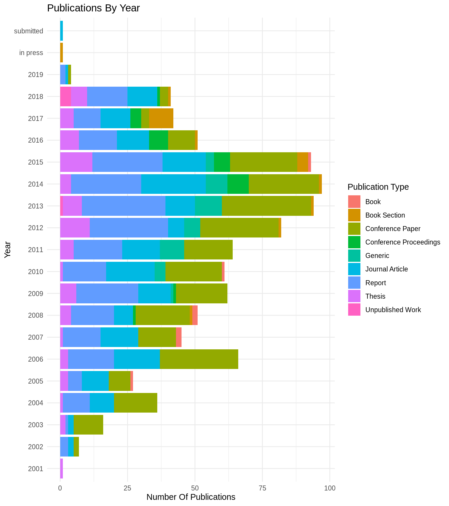

Analyse Endnote Library
Michael Rustler
2019-03-13
Source:vignettes/analyse-endnote.Rmd
analyse-endnote.RmdImport Endnote XML As Data Frame
library(kwb.endnote)
endnote_xml <- kwb.endnote::default_xml()
references_df <- kwb.endnote::create_df_from_endnote_xml(endnote_xml)
#> Reading '2019-01-07_KWB_documents.xml' in folder
#> '/home/travis/R/Library/kwb.endnote/extdata' ... ok.
#> Splitting paths ... ok. (0.06s)
#> Joining, by = "record_id"
n_publications <- length(unique(references_df$record_id))Analysis of Publications
The imported Endnote XML library 2019-01-07_KWB_documents.xml contains 904 which are analysed in detail in the following.
By Type
refs_by_type <- kwb.endnote::get_reference_type_names(endnote_xml) %>%
dplyr::count(.data$ref_type_name) %>%
dplyr::arrange(dplyr::desc(.data$n))
knitr::kable(refs_by_type)| ref_type_name | n |
|---|---|
| Conference Paper | 285 |
| Report | 262 |
| Journal Article | 191 |
| Thesis | 70 |
| Generic | 41 |
| Conference Proceedings | 27 |
| Book Section | 20 |
| Book | 7 |
| Unpublished Work | 1 |
By Year
endnote_list <- kwb.endnote::create_endnote_list(endnote_xml)
refs_df <- kwb.endnote::create_references_df(endnote_list)
refs_by_year <- refs_df %>%
dplyr::count(ref_type_name, year)
knitr::kable(refs_by_year)| ref_type_name | year | n |
|---|---|---|
| Book | 2005 | 1 |
| Book | 2007 | 2 |
| Book | 2008 | 2 |
| Book | 2010 | 1 |
| Book | 2015 | 1 |
| Book Section | 2008 | 1 |
| Book Section | 2012 | 1 |
| Book Section | 2013 | 1 |
| Book Section | 2014 | 1 |
| Book Section | 2015 | 4 |
| Book Section | 2016 | 1 |
| Book Section | 2017 | 9 |
| Book Section | 2018 | 1 |
| Book Section | in press | 1 |
| Conference Paper | 2002 | 2 |
| Conference Paper | 2003 | 11 |
| Conference Paper | 2004 | 16 |
| Conference Paper | 2005 | 8 |
| Conference Paper | 2006 | 29 |
| Conference Paper | 2007 | 14 |
| Conference Paper | 2008 | 19 |
| Conference Paper | 2008 | 1 |
| Conference Paper | 2009 | 19 |
| Conference Paper | 2010 | 21 |
| Conference Paper | 2011 | 18 |
| Conference Paper | 2012 | 29 |
| Conference Paper | 2013 | 33 |
| Conference Paper | 2014 | 26 |
| Conference Paper | 2015 | 25 |
| Conference Paper | 2016 | 10 |
| Conference Paper | 2017 | 3 |
| Conference Paper | 2018 | 1 |
| Conference Proceedings | 2008 | 1 |
| Conference Proceedings | 2009 | 1 |
| Conference Proceedings | 2014 | 8 |
| Conference Proceedings | 2015 | 6 |
| Conference Proceedings | 2016 | 7 |
| Conference Proceedings | 2017 | 4 |
| Generic | 2009 | 1 |
| Generic | 2010 | 4 |
| Generic | 2011 | 9 |
| Generic | 2012 | 6 |
| Generic | 2013 | 10 |
| Generic | 2014 | 8 |
| Generic | 2015 | 3 |
| Journal Article | 2002 | 2 |
| Journal Article | 2003 | 2 |
| Journal Article | 2004 | 9 |
| Journal Article | 2005 | 10 |
| Journal Article | 2006 | 17 |
| Journal Article | 2007 | 14 |
| Journal Article | 2008 | 7 |
| Journal Article | 2009 | 12 |
| Journal Article | 2010 | 18 |
| Journal Article | 2011 | 14 |
| Journal Article | 2012 | 6 |
| Journal Article | 2013 | 11 |
| Journal Article | 2014 | 24 |
| Journal Article | 2015 | 16 |
| Journal Article | 2016 | 12 |
| Journal Article | 2017 | 11 |
| Journal Article | 2018 | 5 |
| Journal Article | submitted | 1 |
| Report | 2002 | 3 |
| Report | 2003 | 1 |
| Report | 2004 | 10 |
| Report | 2005 | 5 |
| Report | 2006 | 17 |
| Report | 2007 | 14 |
| Report | 2008 | 16 |
| Report | 2009 | 23 |
| Report | 2010 | 16 |
| Report | 2011 | 18 |
| Report | 2012 | 29 |
| Report | 2013 | 31 |
| Report | 2014 | 26 |
| Report | 2015 | 26 |
| Report | 2016 | 14 |
| Report | 2017 | 9 |
| Report | 2018 | 4 |
| Thesis | 2001 | 1 |
| Thesis | 2003 | 2 |
| Thesis | 2004 | 1 |
| Thesis | 2005 | 3 |
| Thesis | 2006 | 3 |
| Thesis | 2007 | 1 |
| Thesis | 2008 | 4 |
| Thesis | 2009 | 6 |
| Thesis | 2010 | 1 |
| Thesis | 2011 | 5 |
| Thesis | 2012 | 11 |
| Thesis | 2013 | 7 |
| Thesis | 2014 | 4 |
| Thesis | 2015 | 12 |
| Thesis | 2016 | 6 |
| Thesis | 2017 | 3 |
| Unpublished Work | 2013 | 1 |

By Keywords
keywords_df <- kwb.endnote::create_keywords_df(references_df)
keywords_df %>%
dplyr::filter(.data$n > 1) %>%
knitr::kable()| value | n |
|---|---|
| bank filtration | 24 |
| bwb | 17 |
| simulation | 17 |
| stadtentwässerung | 17 |
| ökobilanz | 16 |
| drinking water | 15 |
| cso | 14 |
| life cycle assessment | 14 |
| modelling | 13 |
| field methods | 12 |
| groundwater | 12 |
| real-time control | 12 |
| urban drainage | 12 |
| well management | 12 |
| cyanobacteria | 11 |
| lca | 11 |
| well ageing | 11 |
| well maintenance | 11 |
| abflusssteuerung | 10 |
| berlin | 10 |
| disinfection | 10 |
| mischwasserüberlauf | 10 |
| combined sewer overflow | 9 |
| cylindrospermopsis raciborskii | 9 |
| monitoring | 9 |
| pathogens | 9 |
| climate change | 8 |
| ozonation | 8 |
| ozone | 8 |
| pharmaceuticals | 8 |
| clogging | 7 |
| doc | 7 |
| integrated modelling | 7 |
| klärschlamm | 7 |
| mbr | 7 |
| membrane bioreactor (mbr) | 7 |
| ozon | 7 |
| phosphorus recovery | 7 |
| water quality | 7 |
| infoworks cs | 6 |
| kanalnetz | 6 |
| risk assessment | 6 |
| river bank filtration | 6 |
| stormwater | 6 |
| veolia | 6 |
| wastewater treatment | 6 |
| abwasserpumpwerk | 5 |
| coagulation | 5 |
| coliphages | 5 |
| combined sewer overflows | 5 |
| diffuse pollution | 5 |
| energy balance | 5 |
| fracking | 5 |
| gravity separation toilet | 5 |
| htc | 5 |
| hydrochemistry | 5 |
| managed aquifer recharge | 5 |
| mar | 5 |
| microsieve | 5 |
| nostocales | 5 |
| phosphorus removal | 5 |
| sampling | 5 |
| sensitivity analysis | 5 |
| sewage sludge | 5 |
| spree | 5 |
| spurenstoffe | 5 |
| tertiary wastewater treatment | 5 |
| vacuum separation toilet | 5 |
| wastewater reuse | 5 |
| well field | 5 |
| abwasserreinigung | 4 |
| aquifer recharge | 4 |
| carbon storage | 4 |
| constructed wetlands | 4 |
| energy efficiency | 4 |
| enhanced biological phosphorus removal (ebpr) | 4 |
| environmental footprint | 4 |
| fouling | 4 |
| hyporheic zone | 4 |
| impact assessment | 4 |
| membrane activated sludge | 4 |
| modeling | 4 |
| nitrate retention | 4 |
| post-denitrification | 4 |
| qsim | 4 |
| sewage system | 4 |
| trace organics | 4 |
| ultrafiltration | 4 |
| well design | 4 |
| well monitoring | 4 |
| adaptation | 3 |
| adsorption | 3 |
| advanced phosphorus removal | 3 |
| aktivkohle | 3 |
| algal toxins | 3 |
| artificial recharge | 3 |
| bf | 3 |
| carbon footprint | 3 |
| catalogue of risks | 3 |
| constructed wetland | 3 |
| cost comparison | 3 |
| critical source areas | 3 |
| cylindrospermopsin | 3 |
| d1.1 | 3 |
| data analysis | 3 |
| datenanalyse | 3 |
| decentralised wastewater concepts | 3 |
| decentralised water supply | 3 |
| decision support | 3 |
| denitrification | 3 |
| dissolved oxygen | 3 |
| drainage system | 3 |
| enteric viruses | 3 |
| field investigations | 3 |
| filterability | 3 |
| filtration | 3 |
| flocculation | 3 |
| freshwater ecology | 3 |
| gis | 3 |
| hydrogeology | 3 |
| ise | 3 |
| kanalnetzsimulation | 3 |
| lakes | 3 |
| low-energy | 3 |
| lowland river | 3 |
| market | 3 |
| micropollutants | 3 |
| online monitoring | 3 |
| online sensoren | 3 |
| organic carbon | 3 |
| pharmaceutical residues | 3 |
| phosphorrückgewinnung | 3 |
| phytoplankton | 3 |
| polluted rivers | 3 |
| pumps | 3 |
| redox conditions | 3 |
| regenwassermanagement | 3 |
| removal | 3 |
| reuse | 3 |
| riverbank filtration | 3 |
| semi-central treatment | 3 |
| sewer condition | 3 |
| sewerage | 3 |
| slow sand filtration | 3 |
| sludge treatment | 3 |
| small-scale system (sss) | 3 |
| software tool | 3 |
| stable isotopes | 3 |
| statistics | 3 |
| tegel | 3 |
| teststand | 3 |
| uncertainty | 3 |
| urine | 3 |
| uv-vis | 3 |
| water supply | 3 |
| water treatment | 3 |
| weitergehende abwasserreinigung | 3 |
| well clogging | 3 |
| well operation | 3 |
| wsstp | 3 |
| 31 redox conditions | 2 |
| abwasserbehandlung | 2 |
| activated carbon | 2 |
| advanced primary treatment | 2 |
| agriculture | 2 |
| alternativ water resources | 2 |
| ammonium | 2 |
| anabaena bergii | 2 |
| anammox | 2 |
| antibiotics | 2 |
| aphanizomenon | 2 |
| aphanizomenon ovalisporum | 2 |
| aquasim | 2 |
| arsenic | 2 |
| artificial groundwater recharge | 2 |
| asset management | 2 |
| bacteria | 2 |
| bathing water | 2 |
| bathing waters | 2 |
| berlin sewer systems | 2 |
| biofiltration | 2 |
| biological filter | 2 |
| brine intrusion | 2 |
| brittany | 2 |
| calibration | 2 |
| case study | 2 |
| cctv | 2 |
| check dam recharge | 2 |
| chennai (india) | 2 |
| city scale | 2 |
| cl/br ratios | 2 |
| cleaning strategies | 2 |
| column experiments | 2 |
| competition | 2 |
| compost separator | 2 |
| decentralised wwtps | 2 |
| deep geothermal energy | 2 |
| degradation | 2 |
| denitrifikation | 2 |
| deterioration modelling | 2 |
| digestion | 2 |
| dissolved organic carbon | 2 |
| drinking water treatment | 2 |
| ecophysiology | 2 |
| electronic noses | 2 |
| emerging contaminants | 2 |
| energiebilanz | 2 |
| energy | 2 |
| energy recovery | 2 |
| energy-positive wastewater treatment | 2 |
| entwässerungssysteme | 2 |
| epanet | 2 |
| exhaust air | 2 |
| extremniederschlag | 2 |
| field scale experiments | 2 |
| fouling rate | 2 |
| frachten | 2 |
| gcs | 2 |
| gewässergütesimulation | 2 |
| glaskugeln | 2 |
| global warming | 2 |
| h2s | 2 |
| hydrogen peroxide | 2 |
| hydrothermal carbonization | 2 |
| hydrothermale carbonisierung | 2 |
| immissionsbewertung | 2 |
| immissionsrichtlinien | 2 |
| india | 2 |
| infrastructure management | 2 |
| integrated management | 2 |
| integrated modeling | 2 |
| integrated urban wastewater systems | 2 |
| interstices | 2 |
| ion exchange | 2 |
| iron bacteria | 2 |
| kanalisation | 2 |
| kinetics | 2 |
| kläranlage | 2 |
| kommunal | 2 |
| lake bank filtration | 2 |
| large-scale sewer research plant | 2 |
| membrane bioreactor | 2 |
| membrane bioreactors (mbr) | 2 |
| microcystins | 2 |
| micropollutant | 2 |
| mischwasser | 2 |
| mischwasserbehandlung | 2 |
| mischwassereinleitung | 2 |
| modellierung | 2 |
| multi-tracer | 2 |
| nährstoffe | 2 |
| new sanitation concepts | 2 |
| niederschlag | 2 |
| nitrification | 2 |
| nitrit | 2 |
| nutrient recovery | 2 |
| odour control | 2 |
| online measurement | 2 |
| openmi | 2 |
| optimization | 2 |
| organic micropollutants | 2 |
| organische spurenstoffe | 2 |
| oxidation. co-treatment | 2 |
| pharmaceutically active compounds | 2 |
| phenazone | 2 |
| phosphor | 2 |
| phosphorentfernung | 2 |
| phosphorus | 2 |
| polysaccharides | 2 |
| post-treatment | 2 |
| pump station | 2 |
| pumping station | 2 |
| qmra | 2 |
| radar | 2 |
| radar rainfall forecast | 2 |
| rain data | 2 |
| rain water harvesting | 2 |
| recharge estimation | 2 |
| redox | 2 |
| redox processes | 2 |
| redox zonation | 2 |
| remote catchment | 2 |
| research needs | 2 |
| river spree | 2 |
| sanitation | 2 |
| sauerstoff | 2 |
| seasonality | 2 |
| seawater intrusion | 2 |
| semi-analytical model | 2 |
| sensitive area | 2 |
| septic tank | 2 |
| sewage | 2 |
| sewer | 2 |
| shale gas exploration | 2 |
| speicherbemessung | 2 |
| statistical analysis | 2 |
| steroids | 2 |
| stickstoff | 2 |
| stickstoffeliminierung | 2 |
| stickstoffentfernung | 2 |
| stormwater management | 2 |
| surface water | 2 |
| surface/groundwater interactions | 2 |
| sustainability | 2 |
| tertiary treatment | 2 |
| tieflandfluss | 2 |
| trace contaminants | 2 |
| trace organic | 2 |
| trace organic compounds | 2 |
| trace organic loads | 2 |
| trace pollutants | 2 |
| treated wastewater | 2 |
| uferfiltration | 2 |
| underground passage | 2 |
| urban aquifer contamination | 2 |
| urban drainage system | 2 |
| uv-absorption | 2 |
| uv-vis spectrometer | 2 |
| variable flows | 2 |
| viruses | 2 |
| vulnerability | 2 |
| wastewater | 2 |
| wastewater treatment plant | 2 |
| water | 2 |
| water balance | 2 |
| water framework directive | 2 |
| water quality simulation | 2 |
| water reuse | 2 |
| water utilities | 2 |
| waterless urinals | 2 |
| weitergehende abwasserbehandlung | 2 |
| wellma1 | 2 |
| wellma2 | 2 |
Create a word cloud for the keywords
Ordered Alphabetically
| key1 | key2 | key3 | key4 | n |
|---|---|---|---|---|
| abstract | style | 225 | ||
| abstract | style[1] | 34 | ||
| abstract | style[10] | 10 | ||
| abstract | style[11] | 8 | ||
| abstract | style[12] | 7 | ||
| abstract | style[13] | 7 | ||
| abstract | style[14] | 5 | ||
| abstract | style[15] | 5 | ||
| abstract | style[16] | 5 | ||
| abstract | style[17] | 5 | ||
| abstract | style[18] | 5 | ||
| abstract | style[19] | 5 | ||
| abstract | style[2] | 34 | ||
| abstract | style[20] | 5 | ||
| abstract | style[21] | 5 | ||
| abstract | style[22] | 5 | ||
| abstract | style[23] | 5 | ||
| abstract | style[24] | 4 | ||
| abstract | style[25] | 4 | ||
| abstract | style[26] | 3 | ||
| abstract | style[27] | 3 | ||
| abstract | style[28] | 3 | ||
| abstract | style[29] | 3 | ||
| abstract | style[3] | 33 | ||
| abstract | style[30] | 2 | ||
| abstract | style[31] | 2 | ||
| abstract | style[32] | 2 | ||
| abstract | style[33] | 2 | ||
| abstract | style[34] | 1 | ||
| abstract | style[35] | 1 | ||
| abstract | style[4] | 27 | ||
| abstract | style[5] | 24 | ||
| abstract | style[6] | 20 | ||
| abstract | style[7] | 19 | ||
| abstract | style[8] | 12 | ||
| abstract | style[9] | 12 | ||
| accession-num | style | 2 | ||
| alt-periodical | abbr-1 | style | 2 | |
| alt-periodical | full-title | style | 2 | |
| auth-address | style | 6 | ||
| call-num | style | 2 | ||
| caption | style | 7 | ||
| contributors | authors | author | style | 202 |
| contributors | authors | author | style[1] | 1 |
| contributors | authors | author | style[2] | 1 |
| contributors | authors | author | style[3] | 1 |
| contributors | authors | author[1] | style | 698 |
| contributors | authors | author[1] | style[1] | 2 |
| contributors | authors | author[1] | style[2] | 2 |
| contributors | authors | author[1] | style[3] | 1 |
| contributors | authors | author[10] | style | 52 |
| contributors | authors | author[10] | style[1] | 2 |
| contributors | authors | author[10] | style[2] | 2 |
| contributors | authors | author[10] | style[3] | 2 |
| contributors | authors | author[11] | style | 37 |
| contributors | authors | author[11] | style[1] | 1 |
| contributors | authors | author[11] | style[2] | 1 |
| contributors | authors | author[11] | style[3] | 1 |
| contributors | authors | author[12] | style | 30 |
| contributors | authors | author[12] | style[1] | 1 |
| contributors | authors | author[12] | style[2] | 1 |
| contributors | authors | author[13] | style | 24 |
| contributors | authors | author[14] | style | 23 |
| contributors | authors | author[15] | style | 22 |
| contributors | authors | author[16] | style | 20 |
| contributors | authors | author[17] | style | 19 |
| contributors | authors | author[18] | style | 19 |
| contributors | authors | author[19] | style | 18 |
| contributors | authors | author[2] | style | 697 |
| contributors | authors | author[2] | style[1] | 3 |
| contributors | authors | author[2] | style[2] | 3 |
| contributors | authors | author[2] | style[3] | 3 |
| contributors | authors | author[20] | style | 16 |
| contributors | authors | author[21] | style | 16 |
| contributors | authors | author[22] | style | 16 |
| contributors | authors | author[23] | style | 16 |
| contributors | authors | author[24] | style | 16 |
| contributors | authors | author[25] | style | 10 |
| contributors | authors | author[26] | style | 8 |
| contributors | authors | author[27] | style | 3 |
| contributors | authors | author[28] | style | 3 |
| contributors | authors | author[29] | style | 3 |
| contributors | authors | author[3] | style | 562 |
| contributors | authors | author[3] | style[1] | 2 |
| contributors | authors | author[3] | style[2] | 2 |
| contributors | authors | author[3] | style[3] | 2 |
| contributors | authors | author[30] | style | 3 |
| contributors | authors | author[31] | style | 1 |
| contributors | authors | author[4] | style | 420 |
| contributors | authors | author[4] | style[1] | 4 |
| contributors | authors | author[4] | style[2] | 4 |
| contributors | authors | author[4] | style[3] | 4 |
| contributors | authors | author[5] | style | 303 |
| contributors | authors | author[5] | style[1] | 4 |
| contributors | authors | author[5] | style[2] | 4 |
| contributors | authors | author[5] | style[3] | 4 |
| contributors | authors | author[6] | style | 217 |
| contributors | authors | author[6] | style[1] | 1 |
| contributors | authors | author[6] | style[2] | 1 |
| contributors | authors | author[6] | style[3] | 1 |
| contributors | authors | author[7] | style | 155 |
| contributors | authors | author[7] | style[1] | 1 |
| contributors | authors | author[7] | style[2] | 1 |
| contributors | authors | author[7] | style[3] | 1 |
| contributors | authors | author[8] | style | 107 |
| contributors | authors | author[8] | style[1] | 1 |
| contributors | authors | author[8] | style[2] | 1 |
| contributors | authors | author[8] | style[3] | 1 |
| contributors | authors | author[9] | style | 75 |
| contributors | authors | author[9] | style[1] | 1 |
| contributors | authors | author[9] | style[2] | 1 |
| contributors | authors | author[9] | style[3] | 1 |
| contributors | secondary-authors | 1 | ||
| contributors | secondary-authors | author | style | 36 |
| contributors | secondary-authors | author[1] | style | 15 |
| contributors | secondary-authors | author[10] | style | 1 |
| contributors | secondary-authors | author[2] | style | 15 |
| contributors | secondary-authors | author[3] | style | 8 |
| contributors | secondary-authors | author[4] | style | 7 |
| contributors | secondary-authors | author[5] | style | 2 |
| contributors | secondary-authors | author[6] | style | 2 |
| contributors | secondary-authors | author[7] | style | 2 |
| contributors | secondary-authors | author[8] | style | 2 |
| contributors | secondary-authors | author[9] | style | 2 |
| contributors | subsidiary-authors | author | style | 19 |
| contributors | tertiary-authors | author | style | 11 |
| contributors | tertiary-authors | author[1] | style | 7 |
| contributors | tertiary-authors | author[2] | style | 7 |
| custom1 | style | 3 | ||
| custom2 | style | 706 | ||
| custom3 | style | 88 | ||
| custom7 | style | 25 | ||
| database | 904 | |||
| dates | pub-dates | date | style | 310 |
| dates | year | style | 904 | |
| edition | style | 3 | ||
| electronic-resource-num | style | 63 | ||
| foreign-keys | key | 904 | ||
| isbn | style | 34 | ||
| keywords | keyword | style | 310 | |
| keywords | keyword[1] | style | 97 | |
| keywords | keyword[2] | style | 97 | |
| keywords | keyword[3] | style | 81 | |
| keywords | keyword[4] | style | 71 | |
| keywords | keyword[5] | style | 42 | |
| keywords | keyword[6] | style | 17 | |
| keywords | keyword[7] | style | 3 | |
| label | style | 47 | ||
| language | style | 625 | ||
| notes | style | 13 | ||
| num-vols | style | 11 | ||
| number | style | 115 | ||
| orig-pub | style | 8 | ||
| orig-pub | style[1] | 1 | ||
| orig-pub | style[10] | 1 | ||
| orig-pub | style[11] | 1 | ||
| orig-pub | style[12] | 1 | ||
| orig-pub | style[13] | 1 | ||
| orig-pub | style[14] | 1 | ||
| orig-pub | style[15] | 1 | ||
| orig-pub | style[16] | 1 | ||
| orig-pub | style[17] | 1 | ||
| orig-pub | style[2] | 1 | ||
| orig-pub | style[3] | 1 | ||
| orig-pub | style[4] | 1 | ||
| orig-pub | style[5] | 1 | ||
| orig-pub | style[6] | 1 | ||
| orig-pub | style[7] | 1 | ||
| orig-pub | style[8] | 1 | ||
| orig-pub | style[9] | 1 | ||
| pages | style | 695 | ||
| periodical | abbr-1 | style | 2 | |
| periodical | full-title | style | 191 | |
| pub-location | style | 531 | ||
| pub-location | style[1] | 1 | ||
| pub-location | style[2] | 1 | ||
| publisher | style | 340 | ||
| rec-number | 904 | |||
| ref-type | 904 | |||
| remote-database-name | style | 2 | ||
| section | style | 103 | ||
| source-app | 904 | |||
| titles | alt-title | style | 4 | |
| titles | secondary-title | style | 595 | |
| titles | secondary-title | style[1] | 12 | |
| titles | secondary-title | style[2] | 12 | |
| titles | secondary-title | style[3] | 11 | |
| titles | tertiary-title | style | 2 | |
| titles | title | style | 886 | |
| titles | title | style[1] | 15 | |
| titles | title | style[2] | 15 | |
| titles | title | style[3] | 6 | |
| urls | 65 | |||
| urls | pdf-urls | url | 773 | |
| urls | pdf-urls | url[1] | 62 | |
| urls | pdf-urls | url[2] | 62 | |
| urls | pdf-urls | url[3] | 5 | |
| urls | related-urls | url | style | 30 |
| volume | style | 225 | ||
| work-type | style | 124 |
Ordered By Frequency
references_df %>%
dplyr::count(key1, key2, key3, key4) %>%
dplyr::arrange(dplyr::desc(n)) %>%
knitr::kable()| key1 | key2 | key3 | key4 | n |
|---|---|---|---|---|
| database | 904 | |||
| dates | year | style | 904 | |
| foreign-keys | key | 904 | ||
| rec-number | 904 | |||
| ref-type | 904 | |||
| source-app | 904 | |||
| titles | title | style | 886 | |
| urls | pdf-urls | url | 773 | |
| custom2 | style | 706 | ||
| contributors | authors | author[1] | style | 698 |
| contributors | authors | author[2] | style | 697 |
| pages | style | 695 | ||
| language | style | 625 | ||
| titles | secondary-title | style | 595 | |
| contributors | authors | author[3] | style | 562 |
| pub-location | style | 531 | ||
| contributors | authors | author[4] | style | 420 |
| publisher | style | 340 | ||
| dates | pub-dates | date | style | 310 |
| keywords | keyword | style | 310 | |
| contributors | authors | author[5] | style | 303 |
| abstract | style | 225 | ||
| volume | style | 225 | ||
| contributors | authors | author[6] | style | 217 |
| contributors | authors | author | style | 202 |
| periodical | full-title | style | 191 | |
| contributors | authors | author[7] | style | 155 |
| work-type | style | 124 | ||
| number | style | 115 | ||
| contributors | authors | author[8] | style | 107 |
| section | style | 103 | ||
| keywords | keyword[1] | style | 97 | |
| keywords | keyword[2] | style | 97 | |
| custom3 | style | 88 | ||
| keywords | keyword[3] | style | 81 | |
| contributors | authors | author[9] | style | 75 |
| keywords | keyword[4] | style | 71 | |
| urls | 65 | |||
| electronic-resource-num | style | 63 | ||
| urls | pdf-urls | url[1] | 62 | |
| urls | pdf-urls | url[2] | 62 | |
| contributors | authors | author[10] | style | 52 |
| label | style | 47 | ||
| keywords | keyword[5] | style | 42 | |
| contributors | authors | author[11] | style | 37 |
| contributors | secondary-authors | author | style | 36 |
| abstract | style[1] | 34 | ||
| abstract | style[2] | 34 | ||
| isbn | style | 34 | ||
| abstract | style[3] | 33 | ||
| contributors | authors | author[12] | style | 30 |
| urls | related-urls | url | style | 30 |
| abstract | style[4] | 27 | ||
| custom7 | style | 25 | ||
| abstract | style[5] | 24 | ||
| contributors | authors | author[13] | style | 24 |
| contributors | authors | author[14] | style | 23 |
| contributors | authors | author[15] | style | 22 |
| abstract | style[6] | 20 | ||
| contributors | authors | author[16] | style | 20 |
| abstract | style[7] | 19 | ||
| contributors | authors | author[17] | style | 19 |
| contributors | authors | author[18] | style | 19 |
| contributors | subsidiary-authors | author | style | 19 |
| contributors | authors | author[19] | style | 18 |
| keywords | keyword[6] | style | 17 | |
| contributors | authors | author[20] | style | 16 |
| contributors | authors | author[21] | style | 16 |
| contributors | authors | author[22] | style | 16 |
| contributors | authors | author[23] | style | 16 |
| contributors | authors | author[24] | style | 16 |
| contributors | secondary-authors | author[1] | style | 15 |
| contributors | secondary-authors | author[2] | style | 15 |
| titles | title | style[1] | 15 | |
| titles | title | style[2] | 15 | |
| notes | style | 13 | ||
| abstract | style[8] | 12 | ||
| abstract | style[9] | 12 | ||
| titles | secondary-title | style[1] | 12 | |
| titles | secondary-title | style[2] | 12 | |
| contributors | tertiary-authors | author | style | 11 |
| num-vols | style | 11 | ||
| titles | secondary-title | style[3] | 11 | |
| abstract | style[10] | 10 | ||
| contributors | authors | author[25] | style | 10 |
| abstract | style[11] | 8 | ||
| contributors | authors | author[26] | style | 8 |
| contributors | secondary-authors | author[3] | style | 8 |
| orig-pub | style | 8 | ||
| abstract | style[12] | 7 | ||
| abstract | style[13] | 7 | ||
| caption | style | 7 | ||
| contributors | secondary-authors | author[4] | style | 7 |
| contributors | tertiary-authors | author[1] | style | 7 |
| contributors | tertiary-authors | author[2] | style | 7 |
| auth-address | style | 6 | ||
| titles | title | style[3] | 6 | |
| abstract | style[14] | 5 | ||
| abstract | style[15] | 5 | ||
| abstract | style[16] | 5 | ||
| abstract | style[17] | 5 | ||
| abstract | style[18] | 5 | ||
| abstract | style[19] | 5 | ||
| abstract | style[20] | 5 | ||
| abstract | style[21] | 5 | ||
| abstract | style[22] | 5 | ||
| abstract | style[23] | 5 | ||
| urls | pdf-urls | url[3] | 5 | |
| abstract | style[24] | 4 | ||
| abstract | style[25] | 4 | ||
| contributors | authors | author[4] | style[1] | 4 |
| contributors | authors | author[4] | style[2] | 4 |
| contributors | authors | author[4] | style[3] | 4 |
| contributors | authors | author[5] | style[1] | 4 |
| contributors | authors | author[5] | style[2] | 4 |
| contributors | authors | author[5] | style[3] | 4 |
| titles | alt-title | style | 4 | |
| abstract | style[26] | 3 | ||
| abstract | style[27] | 3 | ||
| abstract | style[28] | 3 | ||
| abstract | style[29] | 3 | ||
| contributors | authors | author[2] | style[1] | 3 |
| contributors | authors | author[2] | style[2] | 3 |
| contributors | authors | author[2] | style[3] | 3 |
| contributors | authors | author[27] | style | 3 |
| contributors | authors | author[28] | style | 3 |
| contributors | authors | author[29] | style | 3 |
| contributors | authors | author[30] | style | 3 |
| custom1 | style | 3 | ||
| edition | style | 3 | ||
| keywords | keyword[7] | style | 3 | |
| abstract | style[30] | 2 | ||
| abstract | style[31] | 2 | ||
| abstract | style[32] | 2 | ||
| abstract | style[33] | 2 | ||
| accession-num | style | 2 | ||
| alt-periodical | abbr-1 | style | 2 | |
| alt-periodical | full-title | style | 2 | |
| call-num | style | 2 | ||
| contributors | authors | author[1] | style[1] | 2 |
| contributors | authors | author[1] | style[2] | 2 |
| contributors | authors | author[10] | style[1] | 2 |
| contributors | authors | author[10] | style[2] | 2 |
| contributors | authors | author[10] | style[3] | 2 |
| contributors | authors | author[3] | style[1] | 2 |
| contributors | authors | author[3] | style[2] | 2 |
| contributors | authors | author[3] | style[3] | 2 |
| contributors | secondary-authors | author[5] | style | 2 |
| contributors | secondary-authors | author[6] | style | 2 |
| contributors | secondary-authors | author[7] | style | 2 |
| contributors | secondary-authors | author[8] | style | 2 |
| contributors | secondary-authors | author[9] | style | 2 |
| periodical | abbr-1 | style | 2 | |
| remote-database-name | style | 2 | ||
| titles | tertiary-title | style | 2 | |
| abstract | style[34] | 1 | ||
| abstract | style[35] | 1 | ||
| contributors | authors | author | style[1] | 1 |
| contributors | authors | author | style[2] | 1 |
| contributors | authors | author | style[3] | 1 |
| contributors | authors | author[1] | style[3] | 1 |
| contributors | authors | author[11] | style[1] | 1 |
| contributors | authors | author[11] | style[2] | 1 |
| contributors | authors | author[11] | style[3] | 1 |
| contributors | authors | author[12] | style[1] | 1 |
| contributors | authors | author[12] | style[2] | 1 |
| contributors | authors | author[31] | style | 1 |
| contributors | authors | author[6] | style[1] | 1 |
| contributors | authors | author[6] | style[2] | 1 |
| contributors | authors | author[6] | style[3] | 1 |
| contributors | authors | author[7] | style[1] | 1 |
| contributors | authors | author[7] | style[2] | 1 |
| contributors | authors | author[7] | style[3] | 1 |
| contributors | authors | author[8] | style[1] | 1 |
| contributors | authors | author[8] | style[2] | 1 |
| contributors | authors | author[8] | style[3] | 1 |
| contributors | authors | author[9] | style[1] | 1 |
| contributors | authors | author[9] | style[2] | 1 |
| contributors | authors | author[9] | style[3] | 1 |
| contributors | secondary-authors | 1 | ||
| contributors | secondary-authors | author[10] | style | 1 |
| orig-pub | style[1] | 1 | ||
| orig-pub | style[10] | 1 | ||
| orig-pub | style[11] | 1 | ||
| orig-pub | style[12] | 1 | ||
| orig-pub | style[13] | 1 | ||
| orig-pub | style[14] | 1 | ||
| orig-pub | style[15] | 1 | ||
| orig-pub | style[16] | 1 | ||
| orig-pub | style[17] | 1 | ||
| orig-pub | style[2] | 1 | ||
| orig-pub | style[3] | 1 | ||
| orig-pub | style[4] | 1 | ||
| orig-pub | style[5] | 1 | ||
| orig-pub | style[6] | 1 | ||
| orig-pub | style[7] | 1 | ||
| orig-pub | style[8] | 1 | ||
| orig-pub | style[9] | 1 | ||
| pub-location | style[1] | 1 | ||
| pub-location | style[2] | 1 |
Ordered By Ref Type Name and Frequency
references_df %>%
dplyr::count(ref_type_name, key1, key2, key3, key4) %>%
dplyr::arrange(ref_type_name, dplyr::desc(n)) %>%
knitr::kable()| ref_type_name | key1 | key2 | key3 | key4 | n |
|---|---|---|---|---|---|
| Book | contributors | authors | author[1] | style | 7 |
| Book | contributors | authors | author[2] | style | 7 |
| Book | database | 7 | |||
| Book | dates | year | style | 7 | |
| Book | foreign-keys | key | 7 | ||
| Book | rec-number | 7 | |||
| Book | ref-type | 7 | |||
| Book | source-app | 7 | |||
| Book | titles | title | style | 7 | |
| Book | urls | pdf-urls | url | 6 | |
| Book | contributors | authors | author[3] | style | 5 |
| Book | language | style | 5 | ||
| Book | pages | style | 5 | ||
| Book | publisher | style | 5 | ||
| Book | custom2 | style | 4 | ||
| Book | pub-location | style | 4 | ||
| Book | contributors | authors | author[4] | style | 3 |
| Book | titles | secondary-title | style | 3 | |
| Book | volume | style | 3 | ||
| Book | isbn | style | 2 | ||
| Book | keywords | keyword | style | 2 | |
| Book | section | style | 2 | ||
| Book | abstract | style[1] | 1 | ||
| Book | abstract | style[2] | 1 | ||
| Book | abstract | style[3] | 1 | ||
| Book | abstract | style[4] | 1 | ||
| Book | abstract | style[5] | 1 | ||
| Book | abstract | style[6] | 1 | ||
| Book | abstract | style[7] | 1 | ||
| Book | accession-num | style | 1 | ||
| Book | call-num | style | 1 | ||
| Book | contributors | authors | author[5] | style | 1 |
| Book | contributors | authors | author[6] | style | 1 |
| Book | contributors | secondary-authors | author | style | 1 |
| Book | dates | pub-dates | date | style | 1 |
| Book | keywords | keyword[1] | style | 1 | |
| Book | keywords | keyword[2] | style | 1 | |
| Book | notes | style | 1 | ||
| Book | number | style | 1 | ||
| Book | urls | pdf-urls | url[1] | 1 | |
| Book | urls | pdf-urls | url[2] | 1 | |
| Book | work-type | style | 1 | ||
| Book Section | database | 20 | |||
| Book Section | dates | year | style | 20 | |
| Book Section | foreign-keys | key | 20 | ||
| Book Section | rec-number | 20 | |||
| Book Section | ref-type | 20 | |||
| Book Section | source-app | 20 | |||
| Book Section | titles | secondary-title | style | 20 | |
| Book Section | titles | title | style | 20 | |
| Book Section | publisher | style | 17 | ||
| Book Section | contributors | authors | author[1] | style | 16 |
| Book Section | contributors | authors | author[2] | style | 16 |
| Book Section | pub-location | style | 13 | ||
| Book Section | urls | pdf-urls | url | 13 | |
| Book Section | pages | style | 12 | ||
| Book Section | contributors | authors | author[3] | style | 11 |
| Book Section | contributors | secondary-authors | author[1] | style | 11 |
| Book Section | contributors | secondary-authors | author[2] | style | 11 |
| Book Section | custom2 | style | 9 | ||
| Book Section | contributors | authors | author[4] | style | 7 |
| Book Section | isbn | style | 7 | ||
| Book Section | urls | 7 | |||
| Book Section | contributors | secondary-authors | author[3] | style | 6 |
| Book Section | contributors | secondary-authors | author | style | 5 |
| Book Section | contributors | secondary-authors | author[4] | style | 5 |
| Book Section | language | style | 5 | ||
| Book Section | section | style | 5 | ||
| Book Section | contributors | authors | author | style | 4 |
| Book Section | contributors | authors | author[5] | style | 4 |
| Book Section | keywords | keyword[1] | style | 3 | |
| Book Section | keywords | keyword[2] | style | 3 | |
| Book Section | contributors | secondary-authors | author[5] | style | 2 |
| Book Section | contributors | secondary-authors | author[6] | style | 2 |
| Book Section | contributors | secondary-authors | author[7] | style | 2 |
| Book Section | contributors | secondary-authors | author[8] | style | 2 |
| Book Section | contributors | secondary-authors | author[9] | style | 2 |
| Book Section | custom3 | style | 2 | ||
| Book Section | electronic-resource-num | style | 2 | ||
| Book Section | keywords | keyword[3] | style | 2 | |
| Book Section | keywords | keyword[4] | style | 2 | |
| Book Section | volume | style | 2 | ||
| Book Section | abstract | style | 1 | ||
| Book Section | contributors | authors | author[6] | style | 1 |
| Book Section | contributors | secondary-authors | author[10] | style | 1 |
| Book Section | contributors | tertiary-authors | author | style | 1 |
| Book Section | keywords | keyword | style | 1 | |
| Book Section | label | style | 1 | ||
| Book Section | titles | tertiary-title | style | 1 | |
| Conference Paper | database | 285 | |||
| Conference Paper | dates | year | style | 285 | |
| Conference Paper | foreign-keys | key | 285 | ||
| Conference Paper | rec-number | 285 | |||
| Conference Paper | ref-type | 285 | |||
| Conference Paper | source-app | 285 | |||
| Conference Paper | pub-location | style | 279 | ||
| Conference Paper | titles | secondary-title | style | 273 | |
| Conference Paper | titles | title | style | 273 | |
| Conference Paper | contributors | authors | author[1] | style | 251 |
| Conference Paper | contributors | authors | author[2] | style | 251 |
| Conference Paper | custom2 | style | 246 | ||
| Conference Paper | language | style | 231 | ||
| Conference Paper | urls | pdf-urls | url | 226 | |
| Conference Paper | contributors | authors | author[3] | style | 211 |
| Conference Paper | dates | pub-dates | date | style | 203 |
| Conference Paper | pages | style | 202 | ||
| Conference Paper | contributors | authors | author[4] | style | 174 |
| Conference Paper | contributors | authors | author[5] | style | 123 |
| Conference Paper | keywords | keyword | style | 121 | |
| Conference Paper | contributors | authors | author[6] | style | 83 |
| Conference Paper | abstract | style | 76 | ||
| Conference Paper | contributors | authors | author[7] | style | 57 |
| Conference Paper | work-type | style | 48 | ||
| Conference Paper | publisher | style | 40 | ||
| Conference Paper | keywords | keyword[1] | style | 39 | |
| Conference Paper | keywords | keyword[2] | style | 39 | |
| Conference Paper | contributors | authors | author[8] | style | 37 |
| Conference Paper | urls | pdf-urls | url[1] | 33 | |
| Conference Paper | urls | pdf-urls | url[2] | 33 | |
| Conference Paper | contributors | authors | author | style | 32 |
| Conference Paper | keywords | keyword[3] | style | 32 | |
| Conference Paper | volume | style | 29 | ||
| Conference Paper | keywords | keyword[4] | style | 28 | |
| Conference Paper | urls | 26 | |||
| Conference Paper | contributors | secondary-authors | author | style | 23 |
| Conference Paper | contributors | authors | author[9] | style | 19 |
| Conference Paper | custom7 | style | 19 | ||
| Conference Paper | keywords | keyword[5] | style | 16 | |
| Conference Paper | custom3 | style | 15 | ||
| Conference Paper | label | style | 12 | ||
| Conference Paper | titles | secondary-title | style[1] | 11 | |
| Conference Paper | titles | secondary-title | style[2] | 11 | |
| Conference Paper | abstract | style[1] | 10 | ||
| Conference Paper | abstract | style[2] | 10 | ||
| Conference Paper | contributors | authors | author[10] | style | 10 |
| Conference Paper | titles | secondary-title | style[3] | 10 | |
| Conference Paper | abstract | style[3] | 9 | ||
| Conference Paper | abstract | style[4] | 9 | ||
| Conference Paper | titles | title | style[1] | 9 | |
| Conference Paper | titles | title | style[2] | 9 | |
| Conference Paper | abstract | style[5] | 7 | ||
| Conference Paper | contributors | authors | author[11] | style | 7 |
| Conference Paper | abstract | style[6] | 6 | ||
| Conference Paper | abstract | style[7] | 5 | ||
| Conference Paper | contributors | authors | author[12] | style | 5 |
| Conference Paper | num-vols | style | 5 | ||
| Conference Paper | abstract | style[8] | 4 | ||
| Conference Paper | abstract | style[9] | 4 | ||
| Conference Paper | contributors | authors | author[13] | style | 4 |
| Conference Paper | contributors | authors | author[5] | style[1] | 4 |
| Conference Paper | contributors | authors | author[5] | style[2] | 4 |
| Conference Paper | contributors | authors | author[5] | style[3] | 4 |
| Conference Paper | contributors | authors | author[14] | style | 3 |
| Conference Paper | abstract | style[10] | 2 | ||
| Conference Paper | abstract | style[11] | 2 | ||
| Conference Paper | contributors | authors | author[1] | style[1] | 2 |
| Conference Paper | contributors | authors | author[1] | style[2] | 2 |
| Conference Paper | contributors | authors | author[10] | style[1] | 2 |
| Conference Paper | contributors | authors | author[10] | style[2] | 2 |
| Conference Paper | contributors | authors | author[10] | style[3] | 2 |
| Conference Paper | contributors | authors | author[15] | style | 2 |
| Conference Paper | contributors | authors | author[16] | style | 2 |
| Conference Paper | contributors | authors | author[17] | style | 2 |
| Conference Paper | contributors | authors | author[18] | style | 2 |
| Conference Paper | contributors | authors | author[19] | style | 2 |
| Conference Paper | contributors | authors | author[2] | style[1] | 2 |
| Conference Paper | contributors | authors | author[2] | style[2] | 2 |
| Conference Paper | contributors | authors | author[2] | style[3] | 2 |
| Conference Paper | contributors | authors | author[20] | style | 2 |
| Conference Paper | contributors | authors | author[21] | style | 2 |
| Conference Paper | contributors | authors | author[22] | style | 2 |
| Conference Paper | contributors | authors | author[23] | style | 2 |
| Conference Paper | contributors | authors | author[24] | style | 2 |
| Conference Paper | contributors | authors | author[25] | style | 2 |
| Conference Paper | contributors | authors | author[26] | style | 2 |
| Conference Paper | contributors | authors | author[3] | style[1] | 2 |
| Conference Paper | contributors | authors | author[3] | style[2] | 2 |
| Conference Paper | contributors | authors | author[3] | style[3] | 2 |
| Conference Paper | contributors | authors | author[4] | style[1] | 2 |
| Conference Paper | contributors | authors | author[4] | style[2] | 2 |
| Conference Paper | contributors | authors | author[4] | style[3] | 2 |
| Conference Paper | custom1 | style | 2 | ||
| Conference Paper | electronic-resource-num | style | 2 | ||
| Conference Paper | keywords | keyword[6] | style | 2 | |
| Conference Paper | notes | style | 2 | ||
| Conference Paper | titles | title | style[3] | 2 | |
| Conference Paper | urls | pdf-urls | url[3] | 2 | |
| Conference Paper | abstract | style[12] | 1 | ||
| Conference Paper | abstract | style[13] | 1 | ||
| Conference Paper | call-num | style | 1 | ||
| Conference Paper | contributors | authors | author[1] | style[3] | 1 |
| Conference Paper | contributors | authors | author[11] | style[1] | 1 |
| Conference Paper | contributors | authors | author[11] | style[2] | 1 |
| Conference Paper | contributors | authors | author[11] | style[3] | 1 |
| Conference Paper | contributors | authors | author[6] | style[1] | 1 |
| Conference Paper | contributors | authors | author[6] | style[2] | 1 |
| Conference Paper | contributors | authors | author[6] | style[3] | 1 |
| Conference Paper | contributors | authors | author[7] | style[1] | 1 |
| Conference Paper | contributors | authors | author[7] | style[2] | 1 |
| Conference Paper | contributors | authors | author[7] | style[3] | 1 |
| Conference Paper | contributors | authors | author[8] | style[1] | 1 |
| Conference Paper | contributors | authors | author[8] | style[2] | 1 |
| Conference Paper | contributors | authors | author[8] | style[3] | 1 |
| Conference Paper | contributors | authors | author[9] | style[1] | 1 |
| Conference Paper | contributors | authors | author[9] | style[2] | 1 |
| Conference Paper | contributors | authors | author[9] | style[3] | 1 |
| Conference Paper | contributors | secondary-authors | 1 | ||
| Conference Paper | pub-location | style[1] | 1 | ||
| Conference Paper | pub-location | style[2] | 1 | ||
| Conference Paper | section | style | 1 | ||
| Conference Proceedings | database | 27 | |||
| Conference Proceedings | dates | year | style | 27 | |
| Conference Proceedings | foreign-keys | key | 27 | ||
| Conference Proceedings | pub-location | style | 27 | ||
| Conference Proceedings | rec-number | 27 | |||
| Conference Proceedings | ref-type | 27 | |||
| Conference Proceedings | source-app | 27 | |||
| Conference Proceedings | titles | secondary-title | style | 27 | |
| Conference Proceedings | titles | title | style | 27 | |
| Conference Proceedings | contributors | authors | author[1] | style | 26 |
| Conference Proceedings | contributors | authors | author[2] | style | 26 |
| Conference Proceedings | contributors | authors | author[3] | style | 19 |
| Conference Proceedings | publisher | style | 17 | ||
| Conference Proceedings | dates | pub-dates | date | style | 14 |
| Conference Proceedings | urls | pdf-urls | url | 14 | |
| Conference Proceedings | contributors | authors | author[4] | style | 12 |
| Conference Proceedings | pages | style | 11 | ||
| Conference Proceedings | contributors | authors | author[5] | style | 10 |
| Conference Proceedings | contributors | authors | author[6] | style | 8 |
| Conference Proceedings | urls | 8 | |||
| Conference Proceedings | contributors | authors | author[7] | style | 7 |
| Conference Proceedings | custom2 | style | 7 | ||
| Conference Proceedings | contributors | authors | author[8] | style | 5 |
| Conference Proceedings | contributors | authors | author[9] | style | 5 |
| Conference Proceedings | urls | pdf-urls | url[1] | 5 | |
| Conference Proceedings | urls | pdf-urls | url[2] | 5 | |
| Conference Proceedings | keywords | keyword[1] | style | 4 | |
| Conference Proceedings | keywords | keyword[2] | style | 4 | |
| Conference Proceedings | keywords | keyword[3] | style | 4 | |
| Conference Proceedings | contributors | authors | author[10] | style | 3 |
| Conference Proceedings | contributors | authors | author[11] | style | 3 |
| Conference Proceedings | contributors | authors | author[12] | style | 3 |
| Conference Proceedings | contributors | authors | author[13] | style | 3 |
| Conference Proceedings | contributors | authors | author[14] | style | 3 |
| Conference Proceedings | contributors | authors | author[15] | style | 3 |
| Conference Proceedings | contributors | authors | author[16] | style | 3 |
| Conference Proceedings | contributors | authors | author[17] | style | 3 |
| Conference Proceedings | contributors | authors | author[18] | style | 3 |
| Conference Proceedings | contributors | authors | author[19] | style | 3 |
| Conference Proceedings | contributors | authors | author[20] | style | 3 |
| Conference Proceedings | contributors | authors | author[21] | style | 3 |
| Conference Proceedings | contributors | authors | author[22] | style | 3 |
| Conference Proceedings | contributors | authors | author[23] | style | 3 |
| Conference Proceedings | contributors | authors | author[24] | style | 3 |
| Conference Proceedings | contributors | authors | author[25] | style | 3 |
| Conference Proceedings | contributors | authors | author[26] | style | 3 |
| Conference Proceedings | contributors | secondary-authors | author[1] | style | 3 |
| Conference Proceedings | contributors | secondary-authors | author[2] | style | 3 |
| Conference Proceedings | isbn | style | 3 | ||
| Conference Proceedings | language | style | 3 | ||
| Conference Proceedings | abstract | style | 2 | ||
| Conference Proceedings | abstract | style[1] | 2 | ||
| Conference Proceedings | abstract | style[2] | 2 | ||
| Conference Proceedings | abstract | style[3] | 2 | ||
| Conference Proceedings | contributors | authors | author[27] | style | 2 |
| Conference Proceedings | contributors | authors | author[28] | style | 2 |
| Conference Proceedings | contributors | authors | author[29] | style | 2 |
| Conference Proceedings | contributors | authors | author[30] | style | 2 |
| Conference Proceedings | contributors | secondary-authors | author | style | 2 |
| Conference Proceedings | contributors | secondary-authors | author[3] | style | 2 |
| Conference Proceedings | contributors | secondary-authors | author[4] | style | 2 |
| Conference Proceedings | keywords | keyword | style | 2 | |
| Conference Proceedings | keywords | keyword[4] | style | 2 | |
| Conference Proceedings | keywords | keyword[5] | style | 2 | |
| Conference Proceedings | abstract | style[4] | 1 | ||
| Conference Proceedings | abstract | style[5] | 1 | ||
| Conference Proceedings | contributors | authors | author | style | 1 |
| Conference Proceedings | contributors | tertiary-authors | author[1] | style | 1 |
| Conference Proceedings | contributors | tertiary-authors | author[2] | style | 1 |
| Conference Proceedings | label | style | 1 | ||
| Conference Proceedings | titles | tertiary-title | style | 1 | |
| Conference Proceedings | urls | pdf-urls | url[3] | 1 | |
| Conference Proceedings | volume | style | 1 | ||
| Generic | database | 41 | |||
| Generic | dates | year | style | 41 | |
| Generic | foreign-keys | key | 41 | ||
| Generic | rec-number | 41 | |||
| Generic | ref-type | 41 | |||
| Generic | source-app | 41 | |||
| Generic | urls | pdf-urls | url | 41 | |
| Generic | titles | title | style | 38 | |
| Generic | language | style | 37 | ||
| Generic | contributors | authors | author | style | 35 |
| Generic | dates | pub-dates | date | style | 35 |
| Generic | titles | secondary-title | style | 33 | |
| Generic | pages | style | 18 | ||
| Generic | custom2 | style | 12 | ||
| Generic | contributors | authors | author[1] | style | 6 |
| Generic | contributors | authors | author[2] | style | 6 |
| Generic | custom7 | style | 6 | ||
| Generic | work-type | style | 6 | ||
| Generic | keywords | keyword | style | 4 | |
| Generic | titles | title | style[1] | 3 | |
| Generic | titles | title | style[2] | 3 | |
| Generic | pub-location | style | 2 | ||
| Generic | titles | title | style[3] | 2 | |
| Generic | custom1 | style | 1 | ||
| Generic | titles | secondary-title | style[1] | 1 | |
| Generic | titles | secondary-title | style[2] | 1 | |
| Generic | titles | secondary-title | style[3] | 1 | |
| Generic | urls | related-urls | url | style | 1 |
| Journal Article | database | 191 | |||
| Journal Article | dates | year | style | 191 | |
| Journal Article | foreign-keys | key | 191 | ||
| Journal Article | periodical | full-title | style | 191 | |
| Journal Article | rec-number | 191 | |||
| Journal Article | ref-type | 191 | |||
| Journal Article | source-app | 191 | |||
| Journal Article | titles | secondary-title | style | 191 | |
| Journal Article | titles | title | style | 189 | |
| Journal Article | pages | style | 177 | ||
| Journal Article | contributors | authors | author[1] | style | 175 |
| Journal Article | contributors | authors | author[2] | style | 175 |
| Journal Article | urls | pdf-urls | url | 164 | |
| Journal Article | contributors | authors | author[3] | style | 155 |
| Journal Article | volume | style | 148 | ||
| Journal Article | custom2 | style | 146 | ||
| Journal Article | contributors | authors | author[4] | style | 126 |
| Journal Article | language | style | 115 | ||
| Journal Article | section | style | 95 | ||
| Journal Article | number | style | 93 | ||
| Journal Article | contributors | authors | author[5] | style | 90 |
| Journal Article | abstract | style | 81 | ||
| Journal Article | keywords | keyword | style | 72 | |
| Journal Article | contributors | authors | author[6] | style | 68 |
| Journal Article | electronic-resource-num | style | 58 | ||
| Journal Article | contributors | authors | author[7] | style | 47 |
| Journal Article | keywords | keyword[1] | style | 35 | |
| Journal Article | keywords | keyword[2] | style | 35 | |
| Journal Article | contributors | authors | author[8] | style | 30 |
| Journal Article | keywords | keyword[3] | style | 29 | |
| Journal Article | keywords | keyword[4] | style | 29 | |
| Journal Article | contributors | authors | author[9] | style | 23 |
| Journal Article | dates | pub-dates | date | style | 23 |
| Journal Article | keywords | keyword[5] | style | 20 | |
| Journal Article | contributors | authors | author | style | 16 |
| Journal Article | urls | 15 | |||
| Journal Article | contributors | authors | author[10] | style | 14 |
| Journal Article | keywords | keyword[6] | style | 12 | |
| Journal Article | custom3 | style | 11 | ||
| Journal Article | urls | related-urls | url | style | 11 |
| Journal Article | isbn | style | 10 | ||
| Journal Article | abstract | style[1] | 9 | ||
| Journal Article | abstract | style[2] | 9 | ||
| Journal Article | abstract | style[3] | 9 | ||
| Journal Article | abstract | style[4] | 8 | ||
| Journal Article | abstract | style[5] | 8 | ||
| Journal Article | urls | pdf-urls | url[1] | 8 | |
| Journal Article | urls | pdf-urls | url[2] | 8 | |
| Journal Article | abstract | style[6] | 7 | ||
| Journal Article | abstract | style[7] | 7 | ||
| Journal Article | notes | style | 7 | ||
| Journal Article | auth-address | style | 6 | ||
| Journal Article | contributors | authors | author[11] | style | 6 |
| Journal Article | label | style | 6 | ||
| Journal Article | contributors | authors | author[12] | style | 5 |
| Journal Article | abstract | style[10] | 4 | ||
| Journal Article | abstract | style[8] | 4 | ||
| Journal Article | abstract | style[9] | 4 | ||
| Journal Article | caption | style | 4 | ||
| Journal Article | contributors | authors | author[13] | style | 3 |
| Journal Article | contributors | authors | author[14] | style | 3 |
| Journal Article | contributors | authors | author[15] | style | 3 |
| Journal Article | contributors | authors | author[16] | style | 3 |
| Journal Article | edition | style | 3 | ||
| Journal Article | pub-location | style | 3 | ||
| Journal Article | publisher | style | 3 | ||
| Journal Article | work-type | style | 3 | ||
| Journal Article | abstract | style[11] | 2 | ||
| Journal Article | abstract | style[12] | 2 | ||
| Journal Article | abstract | style[13] | 2 | ||
| Journal Article | abstract | style[14] | 2 | ||
| Journal Article | abstract | style[15] | 2 | ||
| Journal Article | abstract | style[16] | 2 | ||
| Journal Article | abstract | style[17] | 2 | ||
| Journal Article | abstract | style[18] | 2 | ||
| Journal Article | abstract | style[19] | 2 | ||
| Journal Article | abstract | style[20] | 2 | ||
| Journal Article | abstract | style[21] | 2 | ||
| Journal Article | abstract | style[22] | 2 | ||
| Journal Article | abstract | style[23] | 2 | ||
| Journal Article | abstract | style[24] | 2 | ||
| Journal Article | abstract | style[25] | 2 | ||
| Journal Article | abstract | style[26] | 2 | ||
| Journal Article | abstract | style[27] | 2 | ||
| Journal Article | abstract | style[28] | 2 | ||
| Journal Article | abstract | style[29] | 2 | ||
| Journal Article | alt-periodical | abbr-1 | style | 2 | |
| Journal Article | alt-periodical | full-title | style | 2 | |
| Journal Article | contributors | authors | author[17] | style | 2 |
| Journal Article | contributors | authors | author[18] | style | 2 |
| Journal Article | contributors | authors | author[19] | style | 2 |
| Journal Article | keywords | keyword[7] | style | 2 | |
| Journal Article | periodical | abbr-1 | style | 2 | |
| Journal Article | remote-database-name | style | 2 | ||
| Journal Article | titles | alt-title | style | 2 | |
| Journal Article | titles | title | style[1] | 2 | |
| Journal Article | titles | title | style[2] | 2 | |
| Journal Article | titles | title | style[3] | 2 | |
| Journal Article | abstract | style[30] | 1 | ||
| Journal Article | abstract | style[31] | 1 | ||
| Journal Article | abstract | style[32] | 1 | ||
| Journal Article | abstract | style[33] | 1 | ||
| Journal Article | abstract | style[34] | 1 | ||
| Journal Article | abstract | style[35] | 1 | ||
| Journal Article | accession-num | style | 1 | ||
| Journal Article | contributors | authors | author[12] | style[1] | 1 |
| Journal Article | contributors | authors | author[12] | style[2] | 1 |
| Report | database | 262 | |||
| Report | dates | year | style | 262 | |
| Report | foreign-keys | key | 262 | ||
| Report | rec-number | 262 | |||
| Report | ref-type | 262 | |||
| Report | source-app | 262 | |||
| Report | titles | title | style | 261 | |
| Report | urls | pdf-urls | url | 245 | |
| Report | custom2 | style | 228 | ||
| Report | contributors | authors | author[1] | style | 216 |
| Report | contributors | authors | author[2] | style | 215 |
| Report | pages | style | 210 | ||
| Report | publisher | style | 187 | ||
| Report | language | style | 167 | ||
| Report | pub-location | style | 162 | ||
| Report | contributors | authors | author[3] | style | 160 |
| Report | contributors | authors | author[4] | style | 97 |
| Report | keywords | keyword | style | 77 | |
| Report | contributors | authors | author[5] | style | 74 |
| Report | custom3 | style | 58 | ||
| Report | abstract | style | 56 | ||
| Report | contributors | authors | author[6] | style | 55 |
| Report | contributors | authors | author | style | 44 |
| Report | contributors | authors | author[7] | style | 43 |
| Report | contributors | authors | author[8] | style | 34 |
| Report | contributors | authors | author[9] | style | 27 |
| Report | label | style | 27 | ||
| Report | contributors | authors | author[10] | style | 24 |
| Report | dates | pub-dates | date | style | 23 |
| Report | number | style | 21 | ||
| Report | contributors | authors | author[11] | style | 20 |
| Report | contributors | subsidiary-authors | author | style | 19 |
| Report | urls | related-urls | url | style | 18 |
| Report | contributors | authors | author[12] | style | 16 |
| Report | contributors | authors | author[13] | style | 13 |
| Report | contributors | authors | author[14] | style | 13 |
| Report | contributors | authors | author[15] | style | 13 |
| Report | contributors | authors | author[16] | style | 12 |
| Report | contributors | authors | author[17] | style | 12 |
| Report | contributors | authors | author[18] | style | 12 |
| Report | isbn | style | 12 | ||
| Report | contributors | authors | author[19] | style | 11 |
| Report | contributors | authors | author[20] | style | 11 |
| Report | contributors | authors | author[21] | style | 11 |
| Report | contributors | authors | author[22] | style | 11 |
| Report | contributors | authors | author[23] | style | 11 |
| Report | contributors | authors | author[24] | style | 11 |
| Report | titles | secondary-title | style | 11 | |
| Report | keywords | keyword[1] | style | 10 | |
| Report | keywords | keyword[2] | style | 10 | |
| Report | keywords | keyword[3] | style | 10 | |
| Report | urls | pdf-urls | url[1] | 10 | |
| Report | urls | pdf-urls | url[2] | 10 | |
| Report | volume | style | 10 | ||
| Report | abstract | style[1] | 9 | ||
| Report | abstract | style[2] | 9 | ||
| Report | abstract | style[3] | 9 | ||
| Report | keywords | keyword[4] | style | 8 | |
| Report | orig-pub | style | 8 | ||
| Report | work-type | style | 8 | ||
| Report | abstract | style[4] | 7 | ||
| Report | urls | 7 | |||
| Report | abstract | style[5] | 6 | ||
| Report | abstract | style[6] | 6 | ||
| Report | abstract | style[7] | 6 | ||
| Report | num-vols | style | 6 | ||
| Report | contributors | authors | author[25] | style | 5 |
| Report | contributors | secondary-authors | author | style | 5 |
| Report | abstract | style[10] | 4 | ||
| Report | abstract | style[11] | 4 | ||
| Report | abstract | style[12] | 4 | ||
| Report | abstract | style[13] | 4 | ||
| Report | abstract | style[8] | 4 | ||
| Report | abstract | style[9] | 4 | ||
| Report | contributors | tertiary-authors | author | style | 4 |
| Report | abstract | style[14] | 3 | ||
| Report | abstract | style[15] | 3 | ||
| Report | abstract | style[16] | 3 | ||
| Report | abstract | style[17] | 3 | ||
| Report | abstract | style[18] | 3 | ||
| Report | abstract | style[19] | 3 | ||
| Report | abstract | style[20] | 3 | ||
| Report | abstract | style[21] | 3 | ||
| Report | abstract | style[22] | 3 | ||
| Report | abstract | style[23] | 3 | ||
| Report | caption | style | 3 | ||
| Report | contributors | authors | author[26] | style | 3 |
| Report | keywords | keyword[5] | style | 3 | |
| Report | abstract | style[24] | 2 | ||
| Report | abstract | style[25] | 2 | ||
| Report | contributors | authors | author[4] | style[1] | 2 |
| Report | contributors | authors | author[4] | style[2] | 2 |
| Report | contributors | authors | author[4] | style[3] | 2 |
| Report | keywords | keyword[6] | style | 2 | |
| Report | notes | style | 2 | ||
| Report | titles | alt-title | style | 2 | |
| Report | urls | pdf-urls | url[3] | 2 | |
| Report | abstract | style[26] | 1 | ||
| Report | abstract | style[27] | 1 | ||
| Report | abstract | style[28] | 1 | ||
| Report | abstract | style[29] | 1 | ||
| Report | abstract | style[30] | 1 | ||
| Report | abstract | style[31] | 1 | ||
| Report | abstract | style[32] | 1 | ||
| Report | abstract | style[33] | 1 | ||
| Report | contributors | authors | author | style[1] | 1 |
| Report | contributors | authors | author | style[2] | 1 |
| Report | contributors | authors | author | style[3] | 1 |
| Report | contributors | authors | author[2] | style[1] | 1 |
| Report | contributors | authors | author[2] | style[2] | 1 |
| Report | contributors | authors | author[2] | style[3] | 1 |
| Report | contributors | authors | author[27] | style | 1 |
| Report | contributors | authors | author[28] | style | 1 |
| Report | contributors | authors | author[29] | style | 1 |
| Report | contributors | authors | author[30] | style | 1 |
| Report | contributors | authors | author[31] | style | 1 |
| Report | electronic-resource-num | style | 1 | ||
| Report | orig-pub | style[1] | 1 | ||
| Report | orig-pub | style[10] | 1 | ||
| Report | orig-pub | style[11] | 1 | ||
| Report | orig-pub | style[12] | 1 | ||
| Report | orig-pub | style[13] | 1 | ||
| Report | orig-pub | style[14] | 1 | ||
| Report | orig-pub | style[15] | 1 | ||
| Report | orig-pub | style[16] | 1 | ||
| Report | orig-pub | style[17] | 1 | ||
| Report | orig-pub | style[2] | 1 | ||
| Report | orig-pub | style[3] | 1 | ||
| Report | orig-pub | style[4] | 1 | ||
| Report | orig-pub | style[5] | 1 | ||
| Report | orig-pub | style[6] | 1 | ||
| Report | orig-pub | style[7] | 1 | ||
| Report | orig-pub | style[8] | 1 | ||
| Report | orig-pub | style[9] | 1 | ||
| Report | titles | title | style[1] | 1 | |
| Report | titles | title | style[2] | 1 | |
| Thesis | contributors | authors | author | style | 70 |
| Thesis | database | 70 | |||
| Thesis | dates | year | style | 70 | |
| Thesis | foreign-keys | key | 70 | ||
| Thesis | publisher | style | 70 | ||
| Thesis | rec-number | 70 | |||
| Thesis | ref-type | 70 | |||
| Thesis | source-app | 70 | |||
| Thesis | titles | title | style | 70 | |
| Thesis | urls | pdf-urls | url | 63 | |
| Thesis | language | style | 62 | ||
| Thesis | pages | style | 60 | ||
| Thesis | work-type | style | 58 | ||
| Thesis | custom2 | style | 54 | ||
| Thesis | pub-location | style | 41 | ||
| Thesis | titles | secondary-title | style | 37 | |
| Thesis | volume | style | 32 | ||
| Thesis | keywords | keyword | style | 31 | |
| Thesis | dates | pub-dates | date | style | 11 |
| Thesis | abstract | style | 9 | ||
| Thesis | contributors | tertiary-authors | author[1] | style | 6 |
| Thesis | contributors | tertiary-authors | author[2] | style | 6 |
| Thesis | contributors | tertiary-authors | author | style | 5 |
| Thesis | keywords | keyword[1] | style | 5 | |
| Thesis | keywords | keyword[2] | style | 5 | |
| Thesis | urls | pdf-urls | url[1] | 5 | |
| Thesis | urls | pdf-urls | url[2] | 5 | |
| Thesis | keywords | keyword[3] | style | 4 | |
| Thesis | abstract | style[1] | 3 | ||
| Thesis | abstract | style[2] | 3 | ||
| Thesis | abstract | style[3] | 3 | ||
| Thesis | custom3 | style | 2 | ||
| Thesis | keywords | keyword[4] | style | 2 | |
| Thesis | urls | 2 | |||
| Thesis | abstract | style[4] | 1 | ||
| Thesis | abstract | style[5] | 1 | ||
| Thesis | keywords | keyword[5] | style | 1 | |
| Thesis | keywords | keyword[6] | style | 1 | |
| Thesis | keywords | keyword[7] | style | 1 | |
| Thesis | notes | style | 1 | ||
| Unpublished Work | contributors | authors | author[1] | style | 1 |
| Unpublished Work | contributors | authors | author[10] | style | 1 |
| Unpublished Work | contributors | authors | author[11] | style | 1 |
| Unpublished Work | contributors | authors | author[12] | style | 1 |
| Unpublished Work | contributors | authors | author[13] | style | 1 |
| Unpublished Work | contributors | authors | author[14] | style | 1 |
| Unpublished Work | contributors | authors | author[15] | style | 1 |
| Unpublished Work | contributors | authors | author[2] | style | 1 |
| Unpublished Work | contributors | authors | author[3] | style | 1 |
| Unpublished Work | contributors | authors | author[4] | style | 1 |
| Unpublished Work | contributors | authors | author[5] | style | 1 |
| Unpublished Work | contributors | authors | author[6] | style | 1 |
| Unpublished Work | contributors | authors | author[7] | style | 1 |
| Unpublished Work | contributors | authors | author[8] | style | 1 |
| Unpublished Work | contributors | authors | author[9] | style | 1 |
| Unpublished Work | contributors | secondary-authors | author[1] | style | 1 |
| Unpublished Work | contributors | secondary-authors | author[2] | style | 1 |
| Unpublished Work | contributors | tertiary-authors | author | style | 1 |
| Unpublished Work | database | 1 | |||
| Unpublished Work | dates | year | style | 1 | |
| Unpublished Work | foreign-keys | key | 1 | ||
| Unpublished Work | publisher | style | 1 | ||
| Unpublished Work | rec-number | 1 | |||
| Unpublished Work | ref-type | 1 | |||
| Unpublished Work | source-app | 1 | |||
| Unpublished Work | titles | title | style | 1 | |
| Unpublished Work | urls | pdf-urls | url | 1 |
Has an Abstract?
refs_with_abstract <- references_df %>%
dplyr::filter(.data$key1 == "abstract") %>%
dplyr::count(.data$record_id, .data$rec_number, .data$ref_type_name)
n_pubs_with_abstract <- nrow(refs_with_abstract)
### Percent of Publications with Abstracts
percent_pubs_with_abstracts <- round(100*nrow(refs_with_abstract)/n_publications,1) 28.7 percent (i.e. 259 / 904 publications) have an abstract.
refs_with_abstract_and_linebreaks <- refs_with_abstract %>%
dplyr::filter(.data$n > 1) %>%
dplyr::arrange(dplyr::desc(.data$n))
n_pubs_with_abstract_and_linebreaks <- nrow(refs_with_abstract_and_linebreaks)
knitr::kable(refs_with_abstract_and_linebreaks)| record_id | rec_number | ref_type_name | n |
|---|---|---|---|
| 592 | 381 | Journal Article | 35 |
| 520 | 430 | Report | 33 |
| 593 | 382 | Journal Article | 29 |
| 587 | 377 | Report | 25 |
| 476 | 467 | Report | 23 |
| 557 | 333 | Report | 13 |
| 844 | 327 | Conference Paper | 13 |
| 554 | 375 | Conference Paper | 11 |
| 242 | 934 | Journal Article | 10 |
| 243 | 720 | Journal Article | 10 |
| 111 | 768 | Conference Paper | 9 |
| 566 | 393 | Conference Paper | 9 |
| 246 | 935 | Journal Article | 7 |
| 508 | 450 | Report | 7 |
| 515 | 379 | Journal Article | 7 |
| 560 | 380 | Journal Article | 7 |
| 724 | 277 | Report | 7 |
| 736 | 172 | Book | 7 |
| 817 | 328 | Conference Paper | 7 |
| 485 | 449 | Conference Paper | 6 |
| 17 | 1044 | Conference Paper | 5 |
| 19 | 997 | Journal Article | 5 |
| 144 | 798 | Conference Proceedings | 5 |
| 514 | 468 | Thesis | 5 |
| 60 | 993 | Conference Paper | 4 |
| 484 | 447 | Conference Paper | 4 |
| 728 | 282 | Report | 4 |
| 24 | 1031 | Conference Proceedings | 3 |
| 248 | 695 | Journal Article | 3 |
| 478 | 460 | Thesis | 3 |
| 507 | 448 | Thesis | 3 |
| 537 | 388 | Report | 3 |
| 880 | 7 | Report | 3 |
| 588 | 339 | Conference Paper | 2 |
However there are some line breaks for these abstracts for in total 34 publications as shown in the table above.
These need to be corrected manually!
By Accessibility Level
Is the accessibility level for the referenc defined in the fiel“custom3” (confidential or not?)
refs_with_accessability_level <- references_df %>%
dplyr::filter(.data$key1 == "custom3") %>%
dplyr::count(.data$value)
n_pubs_with_accessability_level <- sum(refs_with_accessability_level$n)
percent_with_accessibility_level <- round(100*n_pubs_with_accessability_level/n_publications, 1)
knitr::kable(refs_with_accessability_level)| value | n |
|---|---|
| confidential | 20 |
| Confidential | 1 |
| confidential; copyright with Veolia DT | 1 |
| internal | 2 |
| private | 1 |
| PU | 19 |
| public | 42 |
| Public | 2 |
is_confidential <- grepl(paste(c("conf", "PU", "intern", "private"), collapse="|"),
refs_with_accessability_level$value)
n_pubs_confidential <-sum(refs_with_accessability_level$n[is_confidential])
### in percent
percent_confidential <- 100*sum(refs_with_accessability_level$n[is_confidential])/n_pubs_with_accessability_levelOnly for 88 (i.e. 9.7 percent) meta information on the accessibility level is explicitly defined, out of which 43 are defined as confidential (i.e. 48.9 of the publications with metadata on the accessibility level).
Recommendation:
Fill the field custom3 for all publications with either:
public or
confidential
By Project
Group references by “custom2” (i.e. “project names”)
refs_with_project <- references_df %>%
dplyr::filter(.data$key1 == "custom2")
n_pubs_with_project_meta <- nrow(refs_with_project)
### in percent
percent_pubs_with_project_meta <- round(100*n_pubs_with_project_meta/n_publications,1)
unique_project_names <- refs_with_project %>%
dplyr::count(.data$value)
knitr::kable(unique_project_names)| value | n |
|---|---|
| AMEDEUS | 6 |
| Antiocker | 1 |
| ANTIOCKER | 4 |
| Aquisafe | 1 |
| AQUISAFE | 19 |
| Aquisafe 2 | 2 |
| AQUISAFE1 | 1 |
| Aquisafe2 | 1 |
| AQUISAFE2 | 13 |
| ASKURIS | 4 |
| Berlinbeach | 1 |
| BIOSENS | 1 |
| CARISMO | 11 |
| CoDiGreen | 20 |
| COMPAS | 1 |
| COSMA | 13 |
| COSMA-1 | 2 |
| CYLIN | 14 |
| Decamax | 1 |
| DECAMAX | 2 |
| DEMEAU | 15 |
| DEMOWARE | 5 |
| DSWT | 3 |
| DW Biofilters | 1 |
| EcoTreat-1 | 1 |
| ENREM | 24 |
| ENREM+ | 1 |
| ERDRE | 2 |
| EVA | 12 |
| HTC | 2 |
| HTC Berlin | 2 |
| HTC-CHECK | 5 |
| IC NASRI | 3 |
| IC PHARMA | 1 |
| IC-NASRI | 2 |
| IDB India | 1 |
| IMF | 13 |
| ISM | 32 |
| IST4R | 6 |
| IST4R / ASKURIS | 1 |
| ITZM | 1 |
| Karolin | 2 |
| KURAS | 31 |
| MBR-TRAIN | 3 |
| MIA-CSO | 28 |
| MIA-CSO, PREPARED | 1 |
| MONITOR-1 | 9 |
| NASRI | 76 |
| NITROLIMIT | 7 |
| NOSTOTOX | 9 |
| ODOCO ARTNOSE | 3 |
| ODOCO-1 | 1 |
| ODOCO-Artnose | 2 |
| OgRe | 14 |
| OLIGO | 6 |
| OptiWells | 1 |
| OPTIWELLS | 1 |
| OptiWells-1 | 5 |
| Optiwells-2 | 2 |
| OXERAM | 16 |
| OXERAM 2 | 18 |
| OXERAM, OXIRED, CoDiGreen, Prepared | 1 |
| OXERAM1 | 1 |
| OXERAM2 | 3 |
| OXIMAR-1 | 1 |
| OXIMAR1 | 2 |
| OXIRED | 1 |
| OXIRED1 | 2 |
| OXIRED2 | 9 |
| P-Pot | 1 |
| P-REX | 25 |
| PharmaTreat | 1 |
| PILOTOX | 3 |
| PPRP | 2 |
| PREPARED | 8 |
| RIKO-1 | 7 |
| RKM | 7 |
| RWE-BO | 2 |
| SAM-CSO | 15 |
| SAPH PANI | 15 |
| SCST | 16 |
| SEMA | 14 |
| SenBao | 1 |
| SPREE2011 | 4 |
| T-MON | 1 |
| TECHNEAU | 10 |
| TECHNEAU 2.5 | 3 |
| TECHNEAU 5.2 | 3 |
| TECHNEAU WP 2.5 | 6 |
| TECHNEAU WP 5.2 | 2 |
| TECHNEAU_5.2 | 5 |
| TECHNEAU_5.2.11 | 1 |
| TECHNEAU_5.2.3 | 1 |
| TECHNEAU_5.2.4 | 1 |
| TECHNEAU_5.2.6 | 1 |
| TestTools | 2 |
| WellMa | 1 |
| WellMa-1 | 7 |
| WellMa-2 | 10 |
| WellMa-DNA | 1 |
| WellMa1 | 4 |
| WellMa2 | 2 |
| WellMA2 | 1 |
| WellMa2_WP0-2 | 4 |
| WellMa2_WP3-4 | 2 |
| WellMaDNA | 4 |
| WssTP | 7 |
In total 78.1 percent (i.e. 706 / 904 publications) contain meta-information on the project. However, the spelling of project names does not follow a controlled vocabulary yet as can be seen in the table above.
Thus it is recommended to establish a controlled vocabulary for project acroyms according to the best-practices defined in the FAKIN project (see here)
Lastname/Firstname
refs_by_author_lastfirst <- references_df %>%
dplyr::filter(.data$key2 == "authors") %>%
dplyr::count(.data$value) %>%
dplyr::arrange(dplyr::desc(.data$n))
kwb.endnote::plot_pubs_by_author(refs_by_author_lastfirst[1:50, ])
Quite messy the figure above. Thus names should be entered in Endnote in the following format:
Lastname, Firstname
Also note the , also is an author! This is due to entering a wrong semicolon in the Endnote database and needs to be fixed here for at least the following entries:
pubs_with_semicolon_as_author <- references_df %>%
dplyr::filter(.data$key2 == "authors",
.data$value == ",") %>%
dplyr::count(.data$rec_number) %>%
dplyr::arrange(dplyr::desc(.data$n))
n_pubs_with_semicolon_as_author <- nrow(pubs_with_semicolon_as_author)
knitr::kable(pubs_with_semicolon_as_author)| rec_number | n |
|---|---|
| 183 | 5 |
| 213 | 2 |
| 214 | 2 |
| 226 | 2 |
| 239 | 2 |
| 182 | 1 |
| 210 | 1 |
| 215 | 1 |
| 225 | 1 |
| 232 | 1 |
| 233 | 1 |
| 238 | 1 |
| 241 | 1 |
| 242 | 1 |
In total 14 publications contain one or more semicolon authors. This needs to be fixed manually in the Endnote DB.
Lastname
For now data-munging is needed to just use the authors` lastname for aggregating the data
refs_by_author_last <- references_df %>%
dplyr::filter(.data$key2 == "authors") %>%
dplyr::mutate(value = stringr::str_remove_all(.data$value, ",.*")) %>%
dplyr::mutate(value = stringr::str_remove_all(.data$value, "^\\w+\\.?\\s+")) %>%
dplyr::count(.data$value) %>%
dplyr::arrange(dplyr::desc(.data$n))
kwb.endnote::plot_pubs_by_author(refs_by_author_last[1:50, ])
Journal Articles
By Journal
Journal names need to be harmonised. Also needs to be checked what the differences between full-title and secondary-title of journal are.
Journal full-title
Defined in: \(`record`\)periodical\(`full-title`\)style[[1]]
pubs_in_journals <- references_df %>%
dplyr::filter(.data$ref_type_name == "Journal Article")
n_pubs_in_journals <- length(unique(pubs_in_journals$record_id))
journal_title_full <- pubs_in_journals %>%
dplyr::filter(.data$key2 %in% c("full-title")) %>%
dplyr::mutate("source_field" = sprintf("%s_%s",.data$key1,
.data$key2)) %>%
dplyr::count(.data$value, .data$source_field)
knitr::kable(journal_title_full)| value | source_field | n |
|---|---|---|
| Acta hydrochim. et hydrobiol. | periodical_full-title | 1 |
| Acta hydrochimica et hydrobiologica | periodical_full-title | 1 |
| AMBIO. A Journal of the Human Environment | periodical_full-title | 1 |
| Applied and Environmental Microbiology | periodical_full-title | 1 |
| Applied Geochemistry | periodical_full-title | 1 |
| Aquatic Geochemistry | periodical_full-title | 2 |
| bbr | periodical_full-title | 1 |
| bbr Fachmagazin für Brunnen- und Leitungsbau | periodical_full-title | 2 |
| BfN Skripten | periodical_full-title | 1 |
| Blue Facts | periodical_full-title | 2 |
| bluefacts | periodical_full-title | 2 |
| Bornimer Agrartechnische Berichte, Heft 86 | periodical_full-title | 1 |
| Bundesgesundheitsblatt - Gesundheitsforschung - Gesundheitsschutz 2007 | periodical_full-title | 1 |
| Cemie Ingenieur Technik | periodical_full-title | 1 |
| Chemical Engineering Transactions | periodical_full-title | 1 |
| Chemie Ingenieur Technik, Mai 2003 | periodical_full-title | 1 |
| Chemosphere | periodical_full-title | 2 |
| Chemosphere 73 (2008) 451–460 | periodical_full-title | 1 |
| Computers & Geosciences | periodical_full-title | 1 |
| Desalination | periodical_full-title | 2 |
| Desalination and Water Treatment | periodical_full-title | 5 |
| DVGW Energie | Wasser-Praxis | periodical_full-title | 1 |
| DVGW Energie Wasser Praxis | periodical_full-title | 1 |
| DVGW energie wasser-praxis | periodical_full-title | 1 |
| Ecological Engineering | periodical_full-title | 1 |
| energie wasser-praxis | periodical_full-title | 1 |
| Envionmental Science & Technology 2010 | periodical_full-title | 1 |
| Environ Toxicology | periodical_full-title | 1 |
| Environmental Earth Sciences | periodical_full-title | 5 |
| Environmental Engineering Science | periodical_full-title | 1 |
| Environmental Geology | periodical_full-title | 2 |
| Environmental Science & Technology | periodical_full-title | 2 |
| Ernst & Sohn Special 2017 - Regenwasser-Management | periodical_full-title | 1 |
| fbr-Wasserspiegel | periodical_full-title | 1 |
| FEMS Microbiology | periodical_full-title | 1 |
| Fertilizer International | periodical_full-title | 1 |
| Filtration+Separation | periodical_full-title | 1 |
| Gebäudegrün | periodical_full-title | 1 |
| German American Water Technology Magazine | periodical_full-title | 2 |
| green facts | periodical_full-title | 1 |
| Ground Water | periodical_full-title | 1 |
| Ground Water Monitoring & Remediation | periodical_full-title | 2 |
| Grundwasser - Zeitschrift der Fachsektion hydrogeologie | periodical_full-title | 1 |
| GWF Wasser Abwasser | periodical_full-title | 3 |
| GWF Wasser/Abwasser | periodical_full-title | 1 |
| Harmful Algae | periodical_full-title | 1 |
| Humuswirtschaft & Kompost aktuell | periodical_full-title | 2 |
| Hydrogeology Journal | periodical_full-title | 4 |
| Hydrological Processes | periodical_full-title | 1 |
| Hydroplus | periodical_full-title | 1 |
| HyWa Hydrologie und Wasserbewirtschaftung | periodical_full-title | 1 |
| ICUD | periodical_full-title | 1 |
| IGB Jahresforschungsbericht 2003 | periodical_full-title | 1 |
| IGB Jahresforschungsbericht 2006 | periodical_full-title | 1 |
| International Journal of Systematic and Evolutionary Microbiology | periodical_full-title | 1 |
| IWA Specialist group on diffuse pollution. Newsletter | periodical_full-title | 1 |
| IWA Water Research | periodical_full-title | 5 |
| IWA Water Research 45 (2011) 1481-1489 | periodical_full-title | 1 |
| IWA Water Reuse Newsletter July 2011 | periodical_full-title | 1 |
| Journal of Environmental Management | periodical_full-title | 1 |
| Journal of Environmental Sciences | periodical_full-title | 1 |
| Journal of Hazardous Materials | periodical_full-title | 1 |
| Journal of Hydroinformatics | periodical_full-title | 1 |
| Journal of Hydrology | periodical_full-title | 3 |
| Journal of Plankton Research | periodical_full-title | 2 |
| Journal of Soils and Sediments | periodical_full-title | 1 |
| Journal of Water and Climate Change | periodical_full-title | 1 |
| Journal of water and health | periodical_full-title | 3 |
| KA - Abwasser, Abfall | periodical_full-title | 4 |
| KA Abwasser Abfall | periodical_full-title | 2 |
| KA Abwasser Abfall (Accepted) | periodical_full-title | 1 |
| KA Abwasser, Abfall | periodical_full-title | 1 |
| KA Korrespondenz Abwasser, Abfall | periodical_full-title | 2 |
| Korrespondenz Abwasser | periodical_full-title | 3 |
| Korrespondenz Abwasser, Abfall | periodical_full-title | 1 |
| Lake and Reservoir Management | periodical_full-title | 1 |
| Limnol. Oceanogr | periodical_full-title | 1 |
| Mitt Umweltchem Ökotox | periodical_full-title | 1 |
| Mittendrin | periodical_full-title | 1 |
| Neue Landschaft | periodical_full-title | 1 |
| Oecologia | periodical_full-title | 1 |
| Phycologia | periodical_full-title | 1 |
| ReSource | periodical_full-title | 1 |
| Science of the Total Environment | periodical_full-title | 1 |
| Sustainability | periodical_full-title | 1 |
| Sustainable Water Resources Management | periodical_full-title | 1 |
| Toxicology letters | periodical_full-title | 1 |
| Toxicon | periodical_full-title | 4 |
| Umweltmagazin | periodical_full-title | 1 |
| Urban Water Journal | periodical_full-title | 2 |
| VDI Nachrichten | periodical_full-title | 1 |
| Vom Wasser | periodical_full-title | 2 |
| Wasser und Abfall | periodical_full-title | 1 |
| Wasserwirtschaft Wassertechnik (wwt) | periodical_full-title | 1 |
| Water & Wastewater International | periodical_full-title | 2 |
| Water and Wastewater International | periodical_full-title | 1 |
| Water Environmental Research | periodical_full-title | 1 |
| Water Practice & Technology | periodical_full-title | 1 |
| Water Practice and Technology | periodical_full-title | 1 |
| Water Research | periodical_full-title | 11 |
| Water Resources Management | alt-periodical_full-title | 2 |
| Water Resources Management | periodical_full-title | 2 |
| Water Resources Research | periodical_full-title | 2 |
| Water Science & Technology | periodical_full-title | 9 |
| Water Science & Technology: Water Supply | periodical_full-title | 1 |
| Water Science and Technology | periodical_full-title | 7 |
| Water science and technology : a journal of the International Association on Water Pollution Research | periodical_full-title | 1 |
| World of Mining | periodical_full-title | 1 |
| wwt | periodical_full-title | 6 |
| wwt - Wasserwirtschaft Wassertechnik | periodical_full-title | 1 |
| wwt - Wasserwirtschaft Wassertechnik: Modernisierungsreport 2013 | periodical_full-title | 1 |
| wwt Special Rohre und Kanäle | periodical_full-title | 1 |
| wwt wasserwirtschaft wassertechnik | periodical_full-title | 3 |
Journal secondary-title
Defined in: \(`record`\)titles\(`secondary-title`\)style[[1]]
journal_title_secondary <- pubs_in_journals %>%
dplyr::filter(.data$key2 %in% c("secondary-title")) %>%
dplyr::mutate("source_field" = sprintf("%s_%s",.data$key1,
.data$key2)) %>%
dplyr::count(.data$value, .data$source_field)
knitr::kable(journal_title_secondary)| value | source_field | n |
|---|---|---|
| Acta hydrochim. et hydrobiol. | titles_secondary-title | 1 |
| Acta hydrochimica et hydrobiologica | titles_secondary-title | 1 |
| AMBIO. A Journal of the Human Environment | titles_secondary-title | 1 |
| Applied and Environmental Microbiology | titles_secondary-title | 1 |
| Applied Geochemistry | titles_secondary-title | 1 |
| Aquatic Geochemistry | titles_secondary-title | 2 |
| bbr | titles_secondary-title | 1 |
| bbr Fachmagazin für Brunnen- und Leitungsbau | titles_secondary-title | 2 |
| BfN Skripten | titles_secondary-title | 1 |
| blue facts | titles_secondary-title | 1 |
| Blue Facts | titles_secondary-title | 1 |
| bluefacts | titles_secondary-title | 2 |
| Bornimer Agrartechnische Berichte, Heft 86 | titles_secondary-title | 1 |
| Bundesgesundheitsblatt - Gesundheitsforschung - Gesundheitsschutz 2007 | titles_secondary-title | 1 |
| Cemie Ingenieur Technik | titles_secondary-title | 1 |
| Chemical Engineering Transactions | titles_secondary-title | 1 |
| Chemie Ingenieur Technik, Mai 2003 | titles_secondary-title | 1 |
| Chemosphere | titles_secondary-title | 2 |
| Chemosphere 73 (2008) 451–460 | titles_secondary-title | 1 |
| Computers & Geosciences | titles_secondary-title | 1 |
| Desalination | titles_secondary-title | 2 |
| Desalination and Water Treatment | titles_secondary-title | 5 |
| DVGW Energie | Wasser-Praxis | titles_secondary-title | 1 |
| DVGW Energie Wasser Praxis | titles_secondary-title | 1 |
| DVGW energie wasser-praxis | titles_secondary-title | 1 |
| Ecological Engineering | titles_secondary-title | 1 |
| energie wasser-praxis | titles_secondary-title | 1 |
| Envionmental Science & Technology 2010 | titles_secondary-title | 1 |
| Environ Toxicology | titles_secondary-title | 1 |
| Environmental Earth Sciences | titles_secondary-title | 5 |
| Environmental Engineering Science | titles_secondary-title | 1 |
| Environmental Geology | titles_secondary-title | 2 |
| Environmental Science & Technology | titles_secondary-title | 1 |
| Environmental Science & Technology | titles_secondary-title | 1 |
| Ernst & Sohn Special 2017 - Regenwasser-Management | titles_secondary-title | 1 |
| fbr-Wasserspiegel | titles_secondary-title | 1 |
| FEMS Microbiology | titles_secondary-title | 1 |
| Fertilizer International | titles_secondary-title | 1 |
| Filtration+Separation | titles_secondary-title | 1 |
| Gebäudegrün | titles_secondary-title | 1 |
| German American Water Technology Magazine | titles_secondary-title | 2 |
| green facts | titles_secondary-title | 1 |
| Ground Water | titles_secondary-title | 1 |
| Ground Water Monitoring & Remediation | titles_secondary-title | 2 |
| Grundwasser - Zeitschrift der Fachsektion Hydrogeologie | titles_secondary-title | 1 |
| gwf wasser Abwasser | titles_secondary-title | 1 |
| gwf Wasser Abwasser | titles_secondary-title | 1 |
| GWF Wasser Abwasser | titles_secondary-title | 1 |
| GWF Wasser/Abwasser | titles_secondary-title | 1 |
| Harmful Algae | titles_secondary-title | 1 |
| Humuswirtschaft & Kompost aktuell | titles_secondary-title | 1 |
| Humuswirtschaft & Kompost aktuell | titles_secondary-title | 1 |
| Hydrogeology Journal | titles_secondary-title | 4 |
| Hydrological Processes | titles_secondary-title | 1 |
| Hydroplus | titles_secondary-title | 1 |
| HyWa Hydrologie und Wasserbewirtschaftung | titles_secondary-title | 1 |
| ICUD | titles_secondary-title | 1 |
| IGB Jahresforschungsbericht 2003 | titles_secondary-title | 1 |
| IGB Jahresforschungsbericht 2006 | titles_secondary-title | 1 |
| International Journal of Systematic and Evolutionary Microbiology | titles_secondary-title | 1 |
| IWA Specialist group on diffuse pollution. Newsletter | titles_secondary-title | 1 |
| IWA Water Research | titles_secondary-title | 5 |
| IWA Water Research 45 (2011) 1481-1489 | titles_secondary-title | 1 |
| IWA Water Reuse Newsletter July 2011 | titles_secondary-title | 1 |
| Journal of Environmental Management | titles_secondary-title | 1 |
| Journal of Environmental Sciences | titles_secondary-title | 1 |
| Journal of Hazardous Materials | titles_secondary-title | 1 |
| Journal of Hydroinformatics | titles_secondary-title | 1 |
| Journal of Hydrology | titles_secondary-title | 3 |
| Journal of Plankton Research | titles_secondary-title | 2 |
| Journal of Soils and Sediments | titles_secondary-title | 1 |
| Journal of Water and Climate Change | titles_secondary-title | 1 |
| Journal of water and health | titles_secondary-title | 3 |
| KA - Abwasser, Abfall | titles_secondary-title | 4 |
| KA Abwasser Abfall | titles_secondary-title | 2 |
| KA Abwasser Abfall (Accepted) | titles_secondary-title | 1 |
| KA Abwasser, Abfall | titles_secondary-title | 1 |
| KA Korrespondenz Abwasser, Abfall | titles_secondary-title | 2 |
| Korrespondenz Abwasser | titles_secondary-title | 3 |
| Korrespondenz Abwasser, Abfall | titles_secondary-title | 1 |
| Lake and Reservoir Management | titles_secondary-title | 1 |
| Limnol. Oceanogr | titles_secondary-title | 1 |
| Mitt Umweltchem Ökotox | titles_secondary-title | 1 |
| Mittendrin | titles_secondary-title | 1 |
| Neue Landschaft | titles_secondary-title | 1 |
| Oecologia | titles_secondary-title | 1 |
| Phycologia | titles_secondary-title | 1 |
| ReSource | titles_secondary-title | 1 |
| Science of the Total Environment | titles_secondary-title | 1 |
| Sustainability | titles_secondary-title | 1 |
| Sustainable Water Resources Management | titles_secondary-title | 1 |
| Toxicology letters | titles_secondary-title | 1 |
| Toxicon | titles_secondary-title | 4 |
| Umweltmagazin | titles_secondary-title | 1 |
| Urban Water Journal | titles_secondary-title | 2 |
| VDI Nachrichten | titles_secondary-title | 1 |
| Vom Wasser | titles_secondary-title | 2 |
| Wasser und Abfall | titles_secondary-title | 1 |
| Wasserwirtschaft Wassertechnik (wwt) | titles_secondary-title | 1 |
| Water & Wastewater International | titles_secondary-title | 2 |
| Water and Wastewater International | titles_secondary-title | 1 |
| Water Environmental Research | titles_secondary-title | 1 |
| Water Practice & Technology | titles_secondary-title | 1 |
| Water Practice and Technology | titles_secondary-title | 1 |
| Water research | titles_secondary-title | 1 |
| Water Research | titles_secondary-title | 9 |
| Water Research | titles_secondary-title | 1 |
| Water Resources Management | titles_secondary-title | 2 |
| Water Resources Research | titles_secondary-title | 2 |
| Water Science & Technology | titles_secondary-title | 9 |
| Water Science & Technology: Water Supply | titles_secondary-title | 1 |
| Water Science and Technology | titles_secondary-title | 7 |
| Water science and technology : a journal of the International Association on Water Pollution Research | titles_secondary-title | 1 |
| World of Mining | titles_secondary-title | 1 |
| wwt | titles_secondary-title | 6 |
| wwt - Wasserwirtschaft Wassertechnik | titles_secondary-title | 1 |
| wwt - Wasserwirtschaft Wassertechnik: Modernisierungsreport 2013 | titles_secondary-title | 1 |
| wwt Special Rohre und Kanäle | titles_secondary-title | 1 |
| wwt wasserwirtschaft wassertechnik | titles_secondary-title | 3 |
Journal DOI
All 191 journal articles should have an DOI. Let`s check for how many we have this metadata:
has_doi <- stringr::str_detect(pubs_in_journals$value, "doi")
pubs_in_journals_with_doi <- pubs_in_journals[has_doi, ]
n_pubs_in_journals_with_doi <- nrow(pubs_in_journals_with_doi)
knitr::kable(pubs_in_journals_with_doi)| record_id | key1 | key2 | key3 | key4 | value | rec_number | ref_type_id | ref_type_name | |
|---|---|---|---|---|---|---|---|---|---|
| 39 | 3 | electronic-resource-num | style | https://doi.org/10.1016/j.watres.2018.06.057 | 1051 | 17 | Journal Article | ||
| 97 | 11 | electronic-resource-num | style | https://doi.org/10.3390/su10051482 | 1057 | 17 | Journal Article | ||
| 149 | 15 | electronic-resource-num | style | http://dx.doi.org/10.1016/j.jes.2016.04.010 | 1001 | 17 | Journal Article | ||
| 430 | 71 | electronic-resource-num | style | http://dx.doi.org/10.1016/j.watres.2016.08.017 | 873 | 17 | Journal Article | ||
| 487 | 83 | electronic-resource-num | style | http://dx.doi.org/10.1016/j.watres.2016.05.070 | 956 | 17 | Journal Article | ||
| 581 | 100 | urls | related-urls | url | style | http://dx.doi.org/10.1007/s12665-015-4911-8 | 973 | 17 | Journal Article |
| 806 | 182 | urls | related-urls | url | style | http://dx.doi.org/10.1007/s11269-015-0985-z | 916 | 17 | Journal Article |
| 845 | 183 | urls | related-urls | url | style | http://dx.doi.org/10.1007/s11269-015-0985-z | 856 | 17 | Journal Article |
| 961 | 194 | electronic-resource-num | style | http://dx.doi.org/10.1016/j.watres.2015.03.031 | 919 | 17 | Journal Article | ||
| 1829 | 436 | electronic-resource-num | style | dx.doi.org/10.1021/es301422r | 512 | 17 | Journal Article | ||
| 2062 | 503 | electronic-resource-num | style | doi: 10.2166/wst.2011.672 | 435 | 17 | Journal Article | ||
| 2321 | 542 | electronic-resource-num | style | http://dx.doi.org/10.3303/CET1023000 | 353 | 17 | Journal Article | ||
| 2470 | 565 | urls | related-urls | url | style | http://onlinelibrary.wiley.com/doi/10.1111/j.1745-6584.2010.00771.x/abstract | 383 | 17 | Journal Article |
| 2732 | 593 | electronic-resource-num | style | doi:10.1128/AEM.02285-09 | 382 | 17 | Journal Article | ||
| 2918 | 629 | electronic-resource-num | style | doi:10.1029/2007WR006746 | 433 | 17 | Journal Article | ||
| 3065 | 686 | electronic-resource-num | style | doi:10.1016/j.chemosphere.2007.12.017 | 131 | 17 | Journal Article | ||
| 3107 | 694 | electronic-resource-num | style | doi:10.1016/j.chemosphere.2008.06.056 | 434 | 17 | Journal Article |
Only 17 journal publications have a DOI which is either encoded in the field electronic-resource-num and urls.
All DOIs should be entered in the field electronic-resource-num in the following format, i.e.:
Export References To XLSX
Write references dataframe to xlsx with one sheet for each publication type to references.xlsx
And also writting a cleaned version after automatically running kwb.endnote::clean_references_df() to references_cleaned.xlsx.
Check Endnote References
problematic_entries <- kwb.endnote::check_problematic_entries(endnote_list)
#> Creating data frame from 'endnote_list' ... ok. (8.82s)
#> Creating 'cleaned' data frame from 'endnote_list' for comparison ... Check 'Author Names' ... No cleaning of author_names implemented yet. Only hints are generated in
#> case that user defines 'give_hints = TRUE' (default: FALSE) ... ok. (0.00s)
#> Generate hints for 'Author Names' ... Replacing 1 values with fix_multiple_authors_per_line ... ok. (0.00s)
#> Replacing 4 values with fix_firstname_lastname_with_lastname_semicolon_firstname ... ok. (0.00s)
#> Replacing 886 NA values with add_author_lastname_semicolon_firstname ... ok. (0.00s)
#> ok. (0.02s)
#> No cleaning of author_names implemented yet. Only hints are generated in
#> case that user defines 'give_hints = TRUE' (default: FALSE) ... ok. (0.00s)
#> Generate hints for 'Author Names' ... Replacing 1 values with fix_firstname_lastname_with_lastname_semicolon_firstname ... ok. (0.00s)
#> Replacing 897 NA values with add_author_lastname_semicolon_firstname ... ok. (0.00s)
#> ok. (0.02s)
#> No cleaning of author_names implemented yet. Only hints are generated in
#> case that user defines 'give_hints = TRUE' (default: FALSE) ... ok. (0.00s)
#> Generate hints for 'Author Names' ... Replacing 4 values with fix_multiple_authors_per_line ... ok. (0.00s)
#> Replacing 25 values with fix_firstname_lastname_with_lastname_semicolon_firstname ... ok. (0.00s)
#> Replacing 3 values with fix_author_name_by_deleting_last_semicolon ... ok. (0.00s)
#> Replacing 853 NA values with add_author_lastname_semicolon_firstname ... ok. (0.00s)
#> ok. (0.02s)
#> No cleaning of author_names implemented yet. Only hints are generated in
#> case that user defines 'give_hints = TRUE' (default: FALSE) ... ok. (0.00s)
#> Generate hints for 'Author Names' ... Replacing 2 values with fix_firstname_lastname_with_lastname_semicolon_firstname ... ok. (0.00s)
#> Replacing 889 NA values with add_author_lastname_semicolon_firstname ... ok. (0.00s)
#> ok. (0.02s)
#> No cleaning of author_names implemented yet. Only hints are generated in
#> case that user defines 'give_hints = TRUE' (default: FALSE) ... ok. (0.00s)
#> Generate hints for 'Author Names' ... Replacing 1 values with fix_firstname_lastname_with_lastname_semicolon_firstname ... ok. (0.00s)
#> Replacing 896 NA values with add_author_lastname_semicolon_firstname ... ok. (0.00s)
#> ok. (0.02s)
#> No cleaning of author_names implemented yet. Only hints are generated in
#> case that user defines 'give_hints = TRUE' (default: FALSE) ... ok. (0.00s)
#> Generate hints for 'Author Names' ... Replacing 1 values with fix_firstname_lastname_with_lastname_semicolon_firstname ... ok. (0.00s)
#> Replacing 897 NA values with add_author_lastname_semicolon_firstname ... ok. (0.00s)
#> ok. (0.02s)
#> No cleaning of author_names implemented yet. Only hints are generated in
#> case that user defines 'give_hints = TRUE' (default: FALSE) ... ok. (0.00s)
#> Generate hints for 'Author Names' ... Replacing 902 NA values with add_author_lastname_semicolon_firstname ... ok. (0.00s)
#> ok. (0.02s)
#> No cleaning of author_names implemented yet. Only hints are generated in
#> case that user defines 'give_hints = TRUE' (default: FALSE) ... ok. (0.00s)
#> Generate hints for 'Author Names' ... Replacing 902 NA values with add_author_lastname_semicolon_firstname ... ok. (0.00s)
#> ok. (0.02s)
#> No cleaning of author_names implemented yet. Only hints are generated in
#> case that user defines 'give_hints = TRUE' (default: FALSE) ... ok. (0.00s)
#> Generate hints for 'Author Names' ... Replacing 902 NA values with add_author_lastname_semicolon_firstname ... ok. (0.00s)
#> ok. (0.02s)
#> No cleaning of author_names implemented yet. Only hints are generated in
#> case that user defines 'give_hints = TRUE' (default: FALSE) ... ok. (0.00s)
#> Generate hints for 'Author Names' ... Replacing 902 NA values with add_author_lastname_semicolon_firstname ... ok. (0.00s)
#> ok. (0.03s)
#> No cleaning of author_names implemented yet. Only hints are generated in
#> case that user defines 'give_hints = TRUE' (default: FALSE) ... ok. (0.00s)
#> Generate hints for 'Author Names' ... Replacing 902 NA values with add_author_lastname_semicolon_firstname ... ok. (0.00s)
#> ok. (0.02s)
#> No cleaning of author_names implemented yet. Only hints are generated in
#> case that user defines 'give_hints = TRUE' (default: FALSE) ... ok. (0.00s)
#> Generate hints for 'Author Names' ... Replacing 903 NA values with add_author_lastname_semicolon_firstname ... ok. (0.00s)
#> ok. (0.02s)
#> Replacing 1 NA values with add_at_least_one_author_with_lastname_semicolon_firstname ... ok. (0.00s)
#> No cleaning of author_names implemented yet. Only hints are generated in
#> case that user defines 'give_hints = TRUE' (default: FALSE) ... ok. (0.00s)
#> Generate hints for 'Author Names' ... Replacing 10 values with fix_multiple_authors_per_line ... ok. (0.00s)
#> Replacing 91 values with fix_firstname_lastname_with_lastname_semicolon_firstname ... ok. (0.00s)
#> Replacing 4 values with fix_author_name_by_deleting_last_semicolon ... ok. (0.00s)
#> Replacing 1 NA values with add_author_lastname_semicolon_firstname ... ok. (0.00s)
#> ok. (0.03s)
#> No cleaning of author_names implemented yet. Only hints are generated in
#> case that user defines 'give_hints = TRUE' (default: FALSE) ... ok. (0.00s)
#> Generate hints for 'Author Names' ... Replacing 6 values with fix_multiple_authors_per_line ... ok. (0.00s)
#> Replacing 81 values with fix_firstname_lastname_with_lastname_semicolon_firstname ... ok. (0.00s)
#> Replacing 8 values with fix_author_name_by_deleting_last_semicolon ... ok. (0.00s)
#> Replacing 204 NA values with add_author_lastname_semicolon_firstname ... ok. (0.00s)
#> ok. (0.03s)
#> No cleaning of author_names implemented yet. Only hints are generated in
#> case that user defines 'give_hints = TRUE' (default: FALSE) ... ok. (0.00s)
#> Generate hints for 'Author Names' ... Replacing 3 values with fix_multiple_authors_per_line ... ok. (0.00s)
#> Replacing 57 values with fix_firstname_lastname_with_lastname_semicolon_firstname ... ok. (0.00s)
#> Replacing 10 values with fix_author_name_by_deleting_last_semicolon ... ok. (0.00s)
#> Replacing 340 NA values with add_author_lastname_semicolon_firstname ... ok. (0.00s)
#> ok. (0.03s)
#> No cleaning of author_names implemented yet. Only hints are generated in
#> case that user defines 'give_hints = TRUE' (default: FALSE) ... ok. (0.00s)
#> Generate hints for 'Author Names' ... Replacing 4 values with fix_multiple_authors_per_line ... ok. (0.00s)
#> Replacing 50 values with fix_firstname_lastname_with_lastname_semicolon_firstname ... ok. (0.00s)
#> Replacing 4 values with fix_author_name_by_deleting_last_semicolon ... ok. (0.00s)
#> Replacing 480 NA values with add_author_lastname_semicolon_firstname ... ok. (0.00s)
#> ok. (0.04s)
#> No cleaning of author_names implemented yet. Only hints are generated in
#> case that user defines 'give_hints = TRUE' (default: FALSE) ... ok. (0.00s)
#> Generate hints for 'Author Names' ... Replacing 3 values with fix_multiple_authors_per_line ... ok. (0.00s)
#> Replacing 36 values with fix_firstname_lastname_with_lastname_semicolon_firstname ... ok. (0.00s)
#> Replacing 2 values with fix_author_name_by_deleting_last_semicolon ... ok. (0.00s)
#> Replacing 597 NA values with add_author_lastname_semicolon_firstname ... ok. (0.00s)
#> ok. (0.02s)
#> No cleaning of author_names implemented yet. Only hints are generated in
#> case that user defines 'give_hints = TRUE' (default: FALSE) ... ok. (0.00s)
#> Generate hints for 'Author Names' ... Replacing 1 values with fix_multiple_authors_per_line ... ok. (0.00s)
#> Replacing 25 values with fix_firstname_lastname_with_lastname_semicolon_firstname ... ok. (0.00s)
#> Replacing 2 values with fix_author_name_by_deleting_last_semicolon ... ok. (0.00s)
#> Replacing 686 NA values with add_author_lastname_semicolon_firstname ... ok. (0.00s)
#> ok. (0.02s)
#> No cleaning of author_names implemented yet. Only hints are generated in
#> case that user defines 'give_hints = TRUE' (default: FALSE) ... ok. (0.00s)
#> Generate hints for 'Author Names' ... Replacing 2 values with fix_multiple_authors_per_line ... ok. (0.00s)
#> Replacing 22 values with fix_firstname_lastname_with_lastname_semicolon_firstname ... ok. (0.00s)
#> Replacing 2 values with fix_author_name_by_deleting_last_semicolon ... ok. (0.00s)
#> Replacing 748 NA values with add_author_lastname_semicolon_firstname ... ok. (0.00s)
#> ok. (0.02s)
#> No cleaning of author_names implemented yet. Only hints are generated in
#> case that user defines 'give_hints = TRUE' (default: FALSE) ... ok. (0.00s)
#> Generate hints for 'Author Names' ... Replacing 3 values with fix_multiple_authors_per_line ... ok. (0.00s)
#> Replacing 15 values with fix_firstname_lastname_with_lastname_semicolon_firstname ... ok. (0.00s)
#> Replacing 2 values with fix_author_name_by_deleting_last_semicolon ... ok. (0.00s)
#> Replacing 796 NA values with add_author_lastname_semicolon_firstname ... ok. (0.00s)
#> ok. (0.02s)
#> No cleaning of author_names implemented yet. Only hints are generated in
#> case that user defines 'give_hints = TRUE' (default: FALSE) ... ok. (0.00s)
#> Generate hints for 'Author Names' ... Replacing 10 values with fix_firstname_lastname_with_lastname_semicolon_firstname ... ok. (0.00s)
#> Replacing 828 NA values with add_author_lastname_semicolon_firstname ... ok. (0.00s)
#> ok. (0.03s)
#> No cleaning of author_names implemented yet. Only hints are generated in
#> case that user defines 'give_hints = TRUE' (default: FALSE) ... ok. (0.00s)
#> Generate hints for 'Author Names' ... Replacing 8 values with fix_firstname_lastname_with_lastname_semicolon_firstname ... ok. (0.00s)
#> Replacing 850 NA values with add_author_lastname_semicolon_firstname ... ok. (0.00s)
#> ok. (0.02s)
#> No cleaning of author_names implemented yet. Only hints are generated in
#> case that user defines 'give_hints = TRUE' (default: FALSE) ... ok. (0.00s)
#> Generate hints for 'Author Names' ... Replacing 1 values with fix_multiple_authors_per_line ... ok. (0.00s)
#> Replacing 6 values with fix_firstname_lastname_with_lastname_semicolon_firstname ... ok. (0.00s)
#> Replacing 1 values with fix_author_name_by_deleting_last_semicolon ... ok. (0.00s)
#> Replacing 866 NA values with add_author_lastname_semicolon_firstname ... ok. (0.00s)
#> ok. (0.02s)
#> No cleaning of author_names implemented yet. Only hints are generated in
#> case that user defines 'give_hints = TRUE' (default: FALSE) ... ok. (0.00s)
#> Generate hints for 'Author Names' ... Replacing 1 values with fix_multiple_authors_per_line ... ok. (0.00s)
#> Replacing 6 values with fix_firstname_lastname_with_lastname_semicolon_firstname ... ok. (0.00s)
#> Replacing 1 values with fix_author_name_by_deleting_last_semicolon ... ok. (0.00s)
#> Replacing 873 NA values with add_author_lastname_semicolon_firstname ... ok. (0.00s)
#> ok. (0.02s)
#> No cleaning of author_names implemented yet. Only hints are generated in
#> case that user defines 'give_hints = TRUE' (default: FALSE) ... ok. (0.00s)
#> Generate hints for 'Author Names' ... Replacing 5 values with fix_firstname_lastname_with_lastname_semicolon_firstname ... ok. (0.00s)
#> Replacing 880 NA values with add_author_lastname_semicolon_firstname ... ok. (0.00s)
#> ok. (0.02s)
#> No cleaning of author_names implemented yet. Only hints are generated in
#> case that user defines 'give_hints = TRUE' (default: FALSE) ... ok. (0.00s)
#> Generate hints for 'Author Names' ... Replacing 5 values with fix_firstname_lastname_with_lastname_semicolon_firstname ... ok. (0.00s)
#> Replacing 881 NA values with add_author_lastname_semicolon_firstname ... ok. (0.00s)
#> ok. (0.02s)
#> No cleaning of author_names implemented yet. Only hints are generated in
#> case that user defines 'give_hints = TRUE' (default: FALSE) ... ok. (0.00s)
#> Generate hints for 'Author Names' ... Replacing 5 values with fix_firstname_lastname_with_lastname_semicolon_firstname ... ok. (0.00s)
#> Replacing 882 NA values with add_author_lastname_semicolon_firstname ... ok. (0.00s)
#> ok. (0.02s)
#> No cleaning of author_names implemented yet. Only hints are generated in
#> case that user defines 'give_hints = TRUE' (default: FALSE) ... ok. (0.00s)
#> Generate hints for 'Author Names' ... Replacing 4 values with fix_firstname_lastname_with_lastname_semicolon_firstname ... ok. (0.00s)
#> Replacing 884 NA values with add_author_lastname_semicolon_firstname ... ok. (0.00s)
#> ok. (0.02s)
#> No cleaning of author_names implemented yet. Only hints are generated in
#> case that user defines 'give_hints = TRUE' (default: FALSE) ... ok. (0.00s)
#> Generate hints for 'Author Names' ... Replacing 4 values with fix_firstname_lastname_with_lastname_semicolon_firstname ... ok. (0.00s)
#> Replacing 885 NA values with add_author_lastname_semicolon_firstname ... ok. (0.00s)
#> ok. (0.02s)
#> No cleaning of author_names implemented yet. Only hints are generated in
#> case that user defines 'give_hints = TRUE' (default: FALSE) ... ok. (0.00s)
#> Generate hints for 'Author Names' ... Replacing 3 values with fix_firstname_lastname_with_lastname_semicolon_firstname ... ok. (0.00s)
#> Replacing 885 NA values with add_author_lastname_semicolon_firstname ... ok. (0.00s)
#> ok. (0.02s)
#> No cleaning of author_names implemented yet. Only hints are generated in
#> case that user defines 'give_hints = TRUE' (default: FALSE) ... ok. (0.00s)
#> Generate hints for 'Author Names' ... Replacing 3 values with fix_firstname_lastname_with_lastname_semicolon_firstname ... ok. (0.00s)
#> Replacing 886 NA values with add_author_lastname_semicolon_firstname ... ok. (0.00s)
#> ok. (0.02s)
#> No cleaning of author_names implemented yet. Only hints are generated in
#> case that user defines 'give_hints = TRUE' (default: FALSE) ... ok. (0.00s)
#> Generate hints for 'Author Names' ... Replacing 3 values with fix_firstname_lastname_with_lastname_semicolon_firstname ... ok. (0.00s)
#> Replacing 888 NA values with add_author_lastname_semicolon_firstname ... ok. (0.00s)
#> ok. (0.02s)
#> No cleaning of author_names implemented yet. Only hints are generated in
#> case that user defines 'give_hints = TRUE' (default: FALSE) ... ok. (0.00s)
#> Generate hints for 'Author Names' ... Replacing 3 values with fix_firstname_lastname_with_lastname_semicolon_firstname ... ok. (0.00s)
#> Replacing 888 NA values with add_author_lastname_semicolon_firstname ... ok. (0.00s)
#> ok. (0.02s)
#> No cleaning of author_names implemented yet. Only hints are generated in
#> case that user defines 'give_hints = TRUE' (default: FALSE) ... ok. (0.00s)
#> Generate hints for 'Author Names' ... Replacing 3 values with fix_firstname_lastname_with_lastname_semicolon_firstname ... ok. (0.00s)
#> Replacing 888 NA values with add_author_lastname_semicolon_firstname ... ok. (0.00s)
#> ok. (0.02s)
#> No cleaning of author_names implemented yet. Only hints are generated in
#> case that user defines 'give_hints = TRUE' (default: FALSE) ... ok. (0.00s)
#> Generate hints for 'Author Names' ... Replacing 3 values with fix_firstname_lastname_with_lastname_semicolon_firstname ... ok. (0.00s)
#> Replacing 888 NA values with add_author_lastname_semicolon_firstname ... ok. (0.00s)
#> ok. (0.02s)
#> No cleaning of author_names implemented yet. Only hints are generated in
#> case that user defines 'give_hints = TRUE' (default: FALSE) ... ok. (0.00s)
#> Generate hints for 'Author Names' ... Replacing 3 values with fix_firstname_lastname_with_lastname_semicolon_firstname ... ok. (0.00s)
#> Replacing 888 NA values with add_author_lastname_semicolon_firstname ... ok. (0.00s)
#> ok. (0.02s)
#> No cleaning of author_names implemented yet. Only hints are generated in
#> case that user defines 'give_hints = TRUE' (default: FALSE) ... ok. (0.00s)
#> Generate hints for 'Author Names' ... Replacing 1 values with fix_multiple_authors_per_line ... ok. (0.00s)
#> Replacing 3 values with fix_firstname_lastname_with_lastname_semicolon_firstname ... ok. (0.00s)
#> Replacing 1 values with fix_author_name_by_deleting_last_semicolon ... ok. (0.00s)
#> Replacing 894 NA values with add_author_lastname_semicolon_firstname ... ok. (0.00s)
#> ok. (0.02s)
#> No cleaning of author_names implemented yet. Only hints are generated in
#> case that user defines 'give_hints = TRUE' (default: FALSE) ... ok. (0.00s)
#> Generate hints for 'Author Names' ... Replacing 2 values with fix_firstname_lastname_with_lastname_semicolon_firstname ... ok. (0.00s)
#> Replacing 896 NA values with add_author_lastname_semicolon_firstname ... ok. (0.00s)
#> ok. (0.02s)
#> No cleaning of author_names implemented yet. Only hints are generated in
#> case that user defines 'give_hints = TRUE' (default: FALSE) ... ok. (0.00s)
#> Generate hints for 'Author Names' ... Replacing 2 values with fix_firstname_lastname_with_lastname_semicolon_firstname ... ok. (0.00s)
#> Replacing 901 NA values with add_author_lastname_semicolon_firstname ... ok. (0.00s)
#> ok. (0.02s)
#> No cleaning of author_names implemented yet. Only hints are generated in
#> case that user defines 'give_hints = TRUE' (default: FALSE) ... ok. (0.00s)
#> Generate hints for 'Author Names' ... Replacing 2 values with fix_firstname_lastname_with_lastname_semicolon_firstname ... ok. (0.00s)
#> Replacing 901 NA values with add_author_lastname_semicolon_firstname ... ok. (0.00s)
#> ok. (0.02s)
#> No cleaning of author_names implemented yet. Only hints are generated in
#> case that user defines 'give_hints = TRUE' (default: FALSE) ... ok. (0.00s)
#> Generate hints for 'Author Names' ... Replacing 2 values with fix_firstname_lastname_with_lastname_semicolon_firstname ... ok. (0.00s)
#> Replacing 901 NA values with add_author_lastname_semicolon_firstname ... ok. (0.00s)
#> ok. (0.02s)
#> No cleaning of author_names implemented yet. Only hints are generated in
#> case that user defines 'give_hints = TRUE' (default: FALSE) ... ok. (0.00s)
#> Generate hints for 'Author Names' ... Replacing 2 values with fix_firstname_lastname_with_lastname_semicolon_firstname ... ok. (0.00s)
#> Replacing 901 NA values with add_author_lastname_semicolon_firstname ... ok. (0.00s)
#> ok. (0.02s)
#> No cleaning of author_names implemented yet. Only hints are generated in
#> case that user defines 'give_hints = TRUE' (default: FALSE) ... ok. (0.00s)
#> Generate hints for 'Author Names' ... Replacing 903 NA values with add_author_lastname_semicolon_firstname ... ok. (0.00s)
#> ok. (0.02s)
#> ok. (0.83s)
#> Clean 'DOI' ... ok. (0.00s)
#> Clean 'Project Names' ... Generate hints for 'Project Names' ... Replacing 198 NA values with add_project_name ... ok. (0.00s)
#> ok. (0.00s)
#> ok. (0.00s)
#> Clean 'Accessibility' ... Generate hints for 'Accessiblity' ... Replacing 816 NA values with add_public_or_confidential ... ok. (0.00s)
#> ok. (0.00s)
#> ok. (0.00s)
#> ok. (9.63s)
knitr::kable(problematic_entries[1:100,])| rec_number | key | value_org | value_clean |
|---|---|---|---|
| 2 | author_secondary01 | NA | add_author_lastname_semicolon_firstname |
| 2 | author_secondary02 | NA | add_author_lastname_semicolon_firstname |
| 2 | author_secondary03 | NA | add_author_lastname_semicolon_firstname |
| 2 | author_secondary04 | NA | add_author_lastname_semicolon_firstname |
| 2 | author_secondary05 | NA | add_author_lastname_semicolon_firstname |
| 2 | author_secondary06 | NA | add_author_lastname_semicolon_firstname |
| 2 | author_secondary07 | NA | add_author_lastname_semicolon_firstname |
| 2 | author_secondary08 | NA | add_author_lastname_semicolon_firstname |
| 2 | author_secondary09 | NA | add_author_lastname_semicolon_firstname |
| 2 | author_secondary10 | NA | add_author_lastname_semicolon_firstname |
| 2 | author_tertiary01 | NA | add_author_lastname_semicolon_firstname |
| 2 | author_tertiary02 | NA | add_author_lastname_semicolon_firstname |
| 2 | author01 | Nicole Kranz | fix_firstname_lastname_with_lastname_semicolon_firstname |
| 2 | author02 | Antje Vorwerk | fix_firstname_lastname_with_lastname_semicolon_firstname |
| 2 | author03 | Wenke Hansen | fix_firstname_lastname_with_lastname_semicolon_firstname |
| 2 | author04 | NA | add_author_lastname_semicolon_firstname |
| 2 | author05 | NA | add_author_lastname_semicolon_firstname |
| 2 | author06 | NA | add_author_lastname_semicolon_firstname |
| 2 | author07 | NA | add_author_lastname_semicolon_firstname |
| 2 | author08 | NA | add_author_lastname_semicolon_firstname |
| 2 | author09 | NA | add_author_lastname_semicolon_firstname |
| 2 | author10 | NA | add_author_lastname_semicolon_firstname |
| 2 | author11 | NA | add_author_lastname_semicolon_firstname |
| 2 | author12 | NA | add_author_lastname_semicolon_firstname |
| 2 | author13 | NA | add_author_lastname_semicolon_firstname |
| 2 | author14 | NA | add_author_lastname_semicolon_firstname |
| 2 | author15 | NA | add_author_lastname_semicolon_firstname |
| 2 | author16 | NA | add_author_lastname_semicolon_firstname |
| 2 | author17 | NA | add_author_lastname_semicolon_firstname |
| 2 | author18 | NA | add_author_lastname_semicolon_firstname |
| 2 | author19 | NA | add_author_lastname_semicolon_firstname |
| 2 | author20 | NA | add_author_lastname_semicolon_firstname |
| 2 | author21 | NA | add_author_lastname_semicolon_firstname |
| 2 | author22 | NA | add_author_lastname_semicolon_firstname |
| 2 | author23 | NA | add_author_lastname_semicolon_firstname |
| 2 | author24 | NA | add_author_lastname_semicolon_firstname |
| 2 | author25 | NA | add_author_lastname_semicolon_firstname |
| 2 | author26 | NA | add_author_lastname_semicolon_firstname |
| 2 | author27 | NA | add_author_lastname_semicolon_firstname |
| 2 | author28 | NA | add_author_lastname_semicolon_firstname |
| 2 | author29 | NA | add_author_lastname_semicolon_firstname |
| 2 | author30 | NA | add_author_lastname_semicolon_firstname |
| 2 | author31 | NA | add_author_lastname_semicolon_firstname |
| 2 | custom2 | PPRP | pprp |
| 2 | custom3 | NA | add_public_or_confidential |
| 3 | author_secondary01 | NA | add_author_lastname_semicolon_firstname |
| 3 | author_secondary02 | NA | add_author_lastname_semicolon_firstname |
| 3 | author_secondary03 | NA | add_author_lastname_semicolon_firstname |
| 3 | author_secondary04 | NA | add_author_lastname_semicolon_firstname |
| 3 | author_secondary05 | NA | add_author_lastname_semicolon_firstname |
| 3 | author_secondary06 | NA | add_author_lastname_semicolon_firstname |
| 3 | author_secondary07 | NA | add_author_lastname_semicolon_firstname |
| 3 | author_secondary08 | NA | add_author_lastname_semicolon_firstname |
| 3 | author_secondary09 | NA | add_author_lastname_semicolon_firstname |
| 3 | author_secondary10 | NA | add_author_lastname_semicolon_firstname |
| 3 | author_tertiary01 | NA | add_author_lastname_semicolon_firstname |
| 3 | author_tertiary02 | NA | add_author_lastname_semicolon_firstname |
| 3 | author01 | Claire Pineau | fix_firstname_lastname_with_lastname_semicolon_firstname |
| 3 | author02 | Bernd Heinzmann | fix_firstname_lastname_with_lastname_semicolon_firstname |
| 3 | author04 | Matthias Wiemann | fix_firstname_lastname_with_lastname_semicolon_firstname |
| 3 | author05 | Christina Schulz | fix_firstname_lastname_with_lastname_semicolon_firstname |
| 3 | author06 | NA | add_author_lastname_semicolon_firstname |
| 3 | author07 | NA | add_author_lastname_semicolon_firstname |
| 3 | author08 | NA | add_author_lastname_semicolon_firstname |
| 3 | author09 | NA | add_author_lastname_semicolon_firstname |
| 3 | author10 | NA | add_author_lastname_semicolon_firstname |
| 3 | author11 | NA | add_author_lastname_semicolon_firstname |
| 3 | author12 | NA | add_author_lastname_semicolon_firstname |
| 3 | author13 | NA | add_author_lastname_semicolon_firstname |
| 3 | author14 | NA | add_author_lastname_semicolon_firstname |
| 3 | author15 | NA | add_author_lastname_semicolon_firstname |
| 3 | author16 | NA | add_author_lastname_semicolon_firstname |
| 3 | author17 | NA | add_author_lastname_semicolon_firstname |
| 3 | author18 | NA | add_author_lastname_semicolon_firstname |
| 3 | author19 | NA | add_author_lastname_semicolon_firstname |
| 3 | author20 | NA | add_author_lastname_semicolon_firstname |
| 3 | author21 | NA | add_author_lastname_semicolon_firstname |
| 3 | author22 | NA | add_author_lastname_semicolon_firstname |
| 3 | author23 | NA | add_author_lastname_semicolon_firstname |
| 3 | author24 | NA | add_author_lastname_semicolon_firstname |
| 3 | author25 | NA | add_author_lastname_semicolon_firstname |
| 3 | author26 | NA | add_author_lastname_semicolon_firstname |
| 3 | author27 | NA | add_author_lastname_semicolon_firstname |
| 3 | author28 | NA | add_author_lastname_semicolon_firstname |
| 3 | author29 | NA | add_author_lastname_semicolon_firstname |
| 3 | author30 | NA | add_author_lastname_semicolon_firstname |
| 3 | author31 | NA | add_author_lastname_semicolon_firstname |
| 3 | custom2 | RKM | rkm |
| 3 | custom3 | NA | add_public_or_confidential |
| 4 | author_secondary01 | NA | add_author_lastname_semicolon_firstname |
| 4 | author_secondary02 | NA | add_author_lastname_semicolon_firstname |
| 4 | author_secondary03 | NA | add_author_lastname_semicolon_firstname |
| 4 | author_secondary04 | NA | add_author_lastname_semicolon_firstname |
| 4 | author_secondary05 | NA | add_author_lastname_semicolon_firstname |
| 4 | author_secondary06 | NA | add_author_lastname_semicolon_firstname |
| 4 | author_secondary07 | NA | add_author_lastname_semicolon_firstname |
| 4 | author_secondary08 | NA | add_author_lastname_semicolon_firstname |
| 4 | author_secondary09 | NA | add_author_lastname_semicolon_firstname |
| 4 | author_secondary10 | NA | add_author_lastname_semicolon_firstname |
| 4 | author_tertiary01 | NA | add_author_lastname_semicolon_firstname |